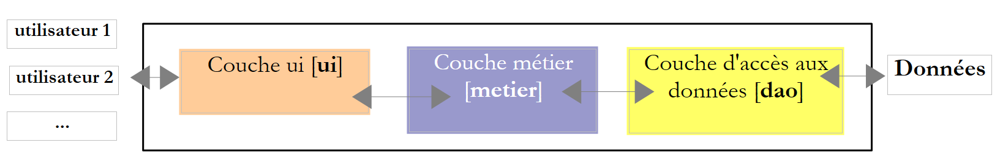
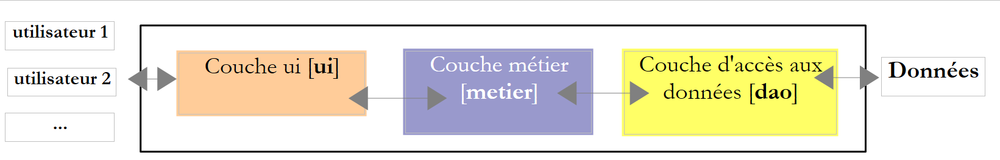
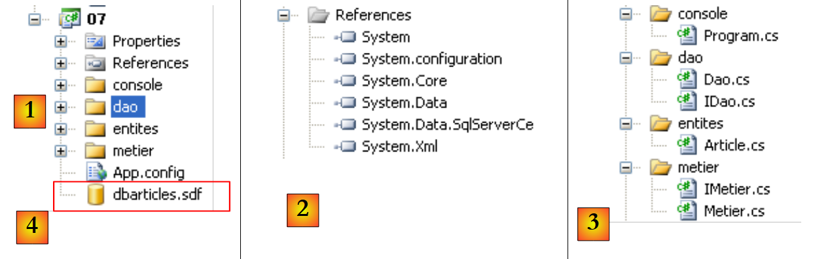
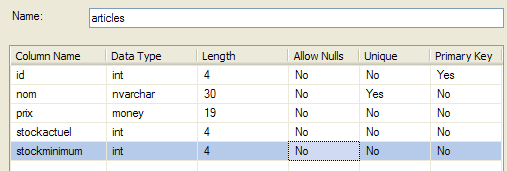

10. Ausführungsthreads
10.1. Die Thread-Klasse
Wenn eine Anwendung gestartet wird, läuft sie in einem Ausführungsablauf, der als Thread bezeichnet wird. Die .NET-Klasse, die einen Thread modelliert, ist System.Threading.Thread und hat folgende Definition:
Hersteller
 |
In den folgenden Beispielen verwenden wir nur die Konstruktoren [1,3]. Der Konstruktor [1] akzeptiert als Parameter eine Methode mit der Signatur [2], d. h. mit einem Parameter vom Typ object, und gibt kein Ergebnis zurück. Der Konstruktor [3] akzeptiert als Parameter eine Methode mit der Signatur [4], d. h. eine Methode, die keinen Parameter hat und kein Ergebnis zurückgibt.
Eigenschaften
Einige nützliche Eigenschaften:
- Thread CurrentThread : statische Eigenschaft, die eine Referenz auf den Thread liefert, in dem sich der Code befindet, der diese Eigenschaft abfragt
- string Name: Name des Threads
- bool IsAlive: Gibt an, ob der Thread läuft oder nicht.
Methoden
Die am häufigsten verwendeten Methoden sind:
- Start(), Start(object obj): Startet die asynchrone Ausführung des Threads, gegebenenfalls durch Übergabe von Informationen in einem Objekt.
- Abort(), Abort(object obj): Beendet einen Thread zwangsweise
- Join(): Der Thread T1, der T2.Join ausführt, wird blockiert, bis T2 beendet ist. Es gibt Varianten, um das Warten nach einer festgelegten Zeit zu beenden.
- Sleep(int n): statische Methode – der Thread, der die Methode ausführt, wird für n Millisekunden angehalten. Er verliert dann die Prozessorausführung, die an einen anderen Thread übergeben wird.
Werfen wir einen Blick auf eine erste Anwendung, die die Existenz eines Hauptausführungsthreads demonstriert, nämlich den, in dem die Funktion Main einer Klasse ausgeführt wird:
using System;
using System.Threading;
namespace Chap8 {
class Program {
static void Main(string[] args) {
// init current thread
Thread main = Thread.CurrentThread;
// display
Console.WriteLine("Thread courant : {0}", main.Name);
// we change the name
main.Name = "main";
// check
Console.WriteLine("Thread courant : {0}", main.Name);
// infinite loop
while (true) {
// display
Console.WriteLine("{0} : {1:hh:mm:ss}", main.Name, DateTime.Now);
// temporary shutdown
Thread.Sleep(1000);
}//while
}
}
}
- Zeile 8: Abrufen einer Referenz auf den Thread, in dem die [main]-Methode ausgeführt wird
- Zeilen 10–14: Anzeigen und Ändern seines Namens
- Zeilen 17–22: Eine Schleife, die jede Sekunde eine Meldung anzeigt
- Zeile 21: Der Thread, in dem die [main]-Methode läuft, wird für 1 Sekunde angehalten
Die Bildschirmausgabe sieht wie folgt aus:
- Zeile 1: Der aktuelle Thread hatte keinen Namen
- Zeile 2: Er hat einen
- Zeilen 3–7: Anzeige jede Sekunde
- Zeile 8: Das Programm wird durch Strg-C unterbrochen.
10.2. Erstellung von Ausführungs-Threads
Es gibt Anwendungen, bei denen Codeabschnitte „gleichzeitig“ in verschiedenen Ausführungsthreads laufen. Wenn wir sagen, dass Threads gleichzeitig laufen, ist dies oft eine Fehlbezeichnung. Verfügt der Rechner nur über einen Prozessor, was immer noch häufig der Fall ist, teilen sich die Threads diesen Prozessor: Sie haben jeweils abwechselnd für kurze Zeit (einige Millisekunden) Zugriff darauf. Dies vermittelt den Anschein einer parallelen Ausführung. Die einem Thread zugewiesene Zeit hängt von verschiedenen Faktoren ab, darunter seiner Priorität, die einen Standardwert hat, aber auch programmgesteuert festgelegt werden kann. Wenn ein Thread den Prozessor hat, nutzt er ihn normalerweise für die gesamte zugewiesene Zeit. Er kann ihn jedoch vorzeitig freigeben:
- indem er auf ein Ereignis wartet (Wait, Join)
- indem er sich für einen festgelegten Zeitraum in den Ruhezustand versetzt (Sleep)
- Ein Thread T wird zunächst von einem der oben vorgestellten Hersteller erstellt, zum Beispiel:
wobei Start eine Methode mit einer der beiden folgenden Signaturen ist:
Das Erstellen eines Threads startet diesen nicht.
- Der Thread T wird mit T.Start() gestartet: Die Methode Start, die an den Konstruktor von T übergeben wird, wird dann vom Thread T ausgeführt. Das Programm, das T.Start() ausführt, wartet nicht auf den Abschluss der Aufgabe T, sondern fährt sofort mit der nächsten Anweisung fort. Das bedeutet, dass zwei Aufgaben parallel laufen. In vielen Fällen müssen sie miteinander kommunizieren können, um den Fortschritt ihrer gemeinsamen Arbeit zu verfolgen. Dies ist das Problem der Thread-Synchronisation.
- Einmal gestartet, läuft der Thread T autonom. Er stoppt, sobald die von ihm ausgeführte Methode Start ihre Arbeit beendet hat.
- Der Thread T kann zur Beendigung gezwungen werden:
- T.Abort() fordert den Thread T auf, zu beenden.
- Sie können auch mit T.Join() auf das Ende seiner Ausführung warten. Dies ist eine blockierende Anweisung: Das Programm, das sie ausführt, wird blockiert, bis die Aufgabe T ihre Arbeit abgeschlossen hat. Dies ist ein Mittel zur Synchronisation.
Sehen wir uns das folgende Programm an:
using System;
using System.Threading;
namespace Chap8 {
class Program {
public static void Main() {
// init Current thread
Thread main = Thread.CurrentThread;
// name the Thread
main.Name = "Main";
// creation of execution threads
Thread[] tâches = new Thread[5];
for (int i = 0; i < tâches.Length; i++) {
// create thread i
tâches[i] = new Thread(Affiche);
// set the thread name
tâches[i].Name = i.ToString();
// start execution of thread i
tâches[i].Start();
}
// end of hand
Console.WriteLine("Fin du thread {0} à {1:hh:mm:ss}",main.Name,DateTime.Now);
}
public static void Affiche() {
// display start of execution
Console.WriteLine("Début d'exécution de la méthode Affiche dans le Thread {0} : {1:hh:mm:ss}",Thread.CurrentThread.Name,DateTime.Now);
// sleep for 1 s
Thread.Sleep(1000);
// display end of run
Console.WriteLine("Fin d'exécution de la méthode Affiche dans le Thread {0} : {1:hh:mm:ss}", Thread.CurrentThread.Name, DateTime.Now);
}
}
}
- Zeilen 8–10: Weisen Sie dem Thread, der die [Main]-Methode ausführt, einen Namen zu
- Zeilen 13–21: Es werden 5 Threads erstellt und ausgeführt. Die Thread-Referenzen werden in einem Array gespeichert, um später abgerufen werden zu können. Jeder Thread führt die Zeilen 27–35 von Poster aus.
- Zeile 20: Thread Nr. i wird gestartet. Dieser Vorgang ist nicht blockierend. Thread Nr. i läuft parallel zum Thread der [Main]-Methode, der ihn gestartet hat.
- Zeile 24: Der Thread, der die [Main]-Methode ausführt, wird beendet.
- Zeilen 27–35: Die Methode [Display] führt Anzeigen aus. Sie zeigt den Namen des Threads an, der sie ausführt, sowie die Start- und Endzeit der Ausführung.
- Zeile 31: Jeder Thread, der die [Display]-Methode ausführt, hält für 1 Sekunde an. Der Prozessor wird dann an einen anderen Thread übergeben, der auf den Prozessor wartet. Am Ende der Wartezeit wird der angehaltene Thread als Kandidat für den Prozessor in Betracht gezogen. Er erhält ihn, sobald er an der Reihe ist. Dies hängt von verschiedenen Faktoren ab, darunter die Priorität anderer Threads, die auf den Prozessor warten.
Die Ergebnisse lauten wie folgt:
Diese Ergebnisse sind sehr aufschlussreich:
- Zunächst einmal sehen wir, dass der Start der Ausführung eines Threads nicht blockierend ist. Der Main-Thread startete die Ausführung von 5 Threads parallel und beendete seine eigene Ausführung vor ihnen. Der Vorgang
// on lance l'exécution du thread i
tâches[i].Start();
startet die Ausführung des Threads tasks[i], doch sobald dies geschehen ist, wird die Ausführung sofort mit der nächsten Anweisung fortgesetzt, ohne darauf zu warten, dass der Thread seine Ausführung beendet.
- Alle erstellten Threads müssen die Methode Affiche ausführen. Die Ausführungsreihenfolge ist unvorhersehbar. Obwohl die Ausführungsreihenfolge im Beispiel der Reihenfolge der Ausführungsanforderungen zu folgen scheint, lassen sich daraus keine allgemeinen Schlussfolgerungen für das Betriebs ziehen. Das Betriebssystem verfügt hier über 6 Threads und einen Prozessor. Es verteilt die Rechenleistung nach eigenen Regeln auf diese 6 Threads.
- Die Ergebnisse sind eine Folge der Methode Sleep. Im Beispiel führt Thread 0 als erster die Methode Affiche aus. Die Meldung zum Start der Ausführung wird angezeigt, und anschließend wird die Methode Sleep ausgeführt, die den Thread für 1 Sekunde anhält. Er verliert dann den Prozessor, der für einen anderen Thread verfügbar wird. Das Beispiel zeigt, dass Thread 1 ihn erhält. Thread 1 wird denselben Weg wie die anderen Threads nehmen. Wenn die Sekunde des Sleep-Zustands von Thread 0 vorbei ist, kann seine Ausführung fortgesetzt werden. Das System weist ihm den Prozessor zu, und er kann die Ausführung der Methode Affiche beenden.
Ändern wir unser Programm so, dass die Funktion „Main“ mit folgenden Anweisungen beendet wird:
// end of hand
Console.WriteLine("Fin du thread " + main.Name);
// stop all threads
Environment.Exit(0);
Die Ausführung des neuen Programms liefert folgende Ergebnisse:
- Zeilen 1–5: Die von „Main“ erstellten Threads beginnen mit der Ausführung und werden für 1 Sekunde unterbrochen
- Zeile 6: Der [Main]-Thread erhält den Prozessor zurück und führt die Anweisung aus:
Dieser Befehl stoppt alle Threads und nicht nur den Main-Thread.
Wenn der Hauptthread darauf warten möchte, dass die von ihm erstellten Threads ihre Ausführung beenden, kann er die Join-Methode der Thread-Klasse verwenden:
public static void Main() {
...
// we wait for all threads
for (int i = 0; i < tâches.Length; i++) {
// wait for thread i to finish execution
tâches[i].Join();
}
// end of hand
Console.WriteLine("Fin du thread {0} à {1:hh:mm:ss}", main.Name, DateTime.Now);
}
- Zeile 6: Der [Main]-Thread wartet auf jeden der Threads. Er wird zunächst blockiert und wartet auf Thread Nr. 1, dann auf Thread Nr. 2 usw. Wenn er schließlich die Schleife der Zeilen 2–5 verlässt, sind alle 5 von ihm gestarteten Threads beendet.
Die Ergebnisse lauten wie folgt:
- Zeile 11: Der [Main]-Thread wurde nach den von ihm gestarteten Threads beendet.
10.3. Die Vorteile von Fäden
Nachdem wir nun die Existenz eines Standard-Threads hervorgehoben haben – jenes, das die Funktion *Main* ausführt – und wissen, wie man neue Threads erstellt, wollen wir uns ansehen, was Threads für uns bedeuten und warum wir sie hier einführen. Es gibt eine Art von Anwendung, die sich besonders gut für die Verwendung von Threads eignet, und das sind die Client-Server-Anwendungen im Internet. Wir werden sie im folgenden Kapitel vorstellen. In einer Client-Server-Anwendung im Internet reagiert ein Server auf Rechner S1 auf Anfragen von Clients auf entfernten Rechnern C1, C2, ..., Cn.
 |
Jeden Tag nutzen wir Internetanwendungen, die diesem Diagramm entsprechen: Webdienste, E-Mail, Forenbesuche, Dateiübertragungen... Im obigen Diagramm muss der Server S1 die Clients Ci gleichzeitig bedienen. Nehmen wir das Beispiel eines FTP-Servers (File Transfer Protocol), der Dateien an seine Clients überträgt: Wir wissen, dass eine Dateiübertragung manchmal mehrere Minuten dauern kann. Natürlich kommt es nicht in Frage, dass ein Client den Server für diese Dauer monopolisiert. Üblicherweise erstellt der Server so viele Ausführungsthreads, wie es Clients gibt. Jeder Thread ist dann für die Betreuung eines bestimmten Clients zuständig. Da der Prozessor zyklisch zwischen allen aktiven Threads des Rechners aufgeteilt wird, verbringt der Server mit jedem Client nur wenig Zeit und gewährleistet so eine gleichzeitige Bedienung.
 |
In der Praxis nutzt der Server einen Thread-Pool mit einer begrenzten Anzahl von Threads, beispielsweise 50. Der 51. Client wird dann gebeten, zu warten.
10.4. Informationsaustausch zwischen Threads
In den vorherigen Beispielen wurde ein Thread wie folgt initialisiert:
wobei Run eine Methode mit folgender Signatur war:
Es ist auch möglich, die folgende Signatur zu verwenden:
Dadurch können Informationen an den gestarteten Thread übermittelt werden. Zum Beispiel:
startet den Thread „t“, der dann wie vorgesehen die ihm zugeordnete Methode „Run“ ausführt und ihr den effektiven Parameter „obj1“ übergibt. Hier ein Beispiel:
using System;
using System.Threading;
namespace Chap8 {
class Program4 {
public static void Main() {
// init Current thread
Thread main = Thread.CurrentThread;
// name the Thread
main.Name = "Main";
// creation of execution threads
Thread[] tâches = new Thread[5];
Data[] data = new Data[5];
for (int i = 0; i < tâches.Length; i++) {
// create thread i
tâches[i] = new Thread(Sleep);
// set the thread name
tâches[i].Name = i.ToString();
// start execution of thread i
tâches[i].Start(data[i] = new Data { Début = DateTime.Now, Durée = i+1 });
}
// we wait for all threads
for (int i = 0; i < tâches.Length; i++) {
// wait for thread i to finish execution
tâches[i].Join();
// result display
Console.WriteLine("Thread {0} terminé : début {1:hh:mm:ss}, durée programmée {2} s, fin {3:hh:mm:ss}, durée effective {4}",
tâches[i].Name,data[i].Début,data[i].Durée,data[i].Fin,(data[i].Fin-data[i].Début));
}
// end of hand
Console.WriteLine("Fin du thread {0} à {1:hh:mm:ss}", main.Name, DateTime.Now);
}
public static void Sleep(object infos) {
// parameter is retrieved
Data data = (Data)infos;
// sleep mode for Duration
Thread.Sleep(data.Durée*1000);
// end of execution
data.Fin = DateTime.Now;
}
}
internal class Data {
// miscellaneous information
public DateTime Début { get; set; }
public int Durée { get; set; }
public DateTime Fin { get; set; }
}
}
- Zeilen 45–50: Informationen vom Typ [Data], die an Threads übergeben werden:
- Start: Startzeitpunkt der Thread-Ausführung – wird vom Launcher-Thread festgelegt
- Duration: Dauer in Sekunden des vom gestarteten Thread ausgeführten Sleep – festgelegt vom Launcher-Thread
- End: Startzeit der Thread-Ausführung – festgelegt vom gestarteten Thread
- Zeilen 35–43: Die von den Threads ausgeführte Methode Sleep hat die Signatur void Sleep(object obj). Der effektive Parameter obj ist vom Typ [Data], der in Zeile 45 definiert ist.
- Zeilen 15–22: Erstellung von 5 Threads
- Zeile 17: Jeder Thread ist mit der Sleep-Methode in Zeile 35 verknüpft
- Zeile 21: Ein Objekt vom Typ [Data] wird an die Methode Start übergeben, die den Thread startet. In diesem Objekt haben wir die Startzeit der Thread-Ausführung und die Dauer in Sekunden notiert, für die der Thread ruhen muss. Dieses Objekt wird in der Tabelle in Zeile 14 gespeichert.
- Zeilen 24–30: Der [Main]-Thread wartet darauf, dass alle von ihm gestarteten Threads beendet sind.
- Zeilen 28–29: Der [Main]-Thread ruft das Objekt data[i] aus Thread Nr. i ab und zeigt dessen Inhalt an.
- Zeilen 35–42: Die von den Threads ausgeführte Methode Sleep
- Zeile 37: Der Typ-Parameter [Data] wird abgerufen
- Zeile 39: Der Feldparameter „Duration“ wird verwendet, um die Dauer von „Sleep“ festzulegen
- Zeile 41: Das Feld „End“ des Parameters wird initialisiert
Die Ergebnisse lauten wie folgt:
Dieses Beispiel zeigt, dass zwei Threads Informationen austauschen können:
- Der Start-Thread kann die Ausführung des gestarteten Threads steuern, indem er ihm Informationen übermittelt
- der gestartete Thread kann Ergebnisse an den startenden Thread zurückgeben.
Damit der gestartete Thread weiß, wann die Ergebnisse, auf die er wartet, verfügbar sind, muss er benachrichtigt werden, sobald der gestartete Thread beendet ist. Hier wurde mit der Join-Funktion auf dessen Beendigung gewartet. Es gibt andere Möglichkeiten, dasselbe zu erreichen. Wir werden uns diese später ansehen.
10.5. Konkurrierender Zugriff auf gemeinsam genutzte Ressourcen
10.5.1. Nicht synchronisierter gleichzeitiger Zugriff
Im Abschnitt über den Informationsaustausch zwischen Threads wurden die Informationen nur von zwei Threads und zu ganz bestimmten Zeitpunkten ausgetauscht. Dies war eine klassische Parameterübergabe. In anderen Fällen werden Informationen von mehreren Threads gemeinsam genutzt, die diese möglicherweise gleichzeitig lesen oder aktualisieren möchten. Dies wirft das Problem der Informationsintegrität auf. Angenommen, die gemeinsam genutzten Informationen sind eine Struktur S mit verschiedenen Informationselementen I1, I2, ... In.
- Ein T1-Thread beginnt mit der Aktualisierung der Struktur S: Er ändert das Feld I1 und wird unterbrochen, bevor die gesamte Aktualisierung der Struktur S abgeschlossen ist
- Ein T2-Thread, der den Prozessor übernimmt, liest daraufhin die Struktur S, um Entscheidungen zu treffen. Er liest eine Struktur in einem instabilen Zustand: Einige Felder sind auf dem neuesten Stand, andere nicht.
Wir bezeichnen diese Situation als Zugriff auf eine gemeinsam genutzte Ressource, in diesem Fall die Struktur S, und ihre Handhabung ist oft recht knifflig. Betrachten wir das folgende Beispiel, um die Probleme zu veranschaulichen, die dabei auftreten können:
- Eine Anwendung generiert n Threads, wobei n als Parameter übergeben wird
- Die gemeinsam genutzte Ressource ist ein Zähler, der von jedem generierten Thread erhöht werden muss
- Am Ende der Anwendung wird der Wert des Zählers angezeigt. Wir sollten daher n ermitteln.
Das Programm sieht wie folgt aus:
using System;
using System.Threading;
namespace Chap8 {
class Program {
// class variables
static int cptrThreads = 0; // thread counter
//hand
public static void Main(string[] args) {
// instructions for use
const string syntaxe = "pg nbThreads";
const int nbMaxThreads = 100;
// verification no. of arguments
if (args.Length != 1) {
// error
Console.WriteLine(syntaxe);
// stop
Environment.Exit(1);
}
// argument quality check
int nbThreads = 0;
bool erreur = false;
try {
nbThreads = int.Parse(args[0]);
if (nbThreads < 1 || nbThreads > nbMaxThreads)
erreur = true;
} catch {
// error
erreur = true;
}
// mistake?
if (erreur) {
// error
Console.Error.WriteLine("Nombre de threads incorrect (entre 1 et 100)");
// end
Environment.Exit(2);
}
// thread creation and generation
Thread[] threads = new Thread[nbThreads];
for (int i = 0; i < nbThreads; i++) {
// creation
threads[i] = new Thread(Incrémente);
// naming
threads[i].Name = "" + i;
// launch
threads[i].Start();
}//for
// waiting for threads to finish
for (int i = 0; i < nbThreads; i++) {
threads[i].Join();
}
// counter display
Console.WriteLine("Nombre de threads générés : " + cptrThreads);
}
public static void Incrémente() {
// increases thread counter
// meter reading
int valeur = cptrThreads;
// follow-up
Console.WriteLine("A {0:hh:mm:ss}, le thread {1} a lu la valeur du compteur : {2}", DateTime.Now, Thread.CurrentThread.Name, cptrThreads);
// waiting
Thread.Sleep(1000);
// counter incrementation
cptrThreads = valeur + 1;
// follow-up
Console.WriteLine("A {0:hh:mm:ss}, le thread {1} a écrit la valeur du compteur : {2}", DateTime.Now, Thread.CurrentThread.Name, cptrThreads);
}
}
}
Wir werden nicht näher auf die Thread-Erzeugung eingehen, da diese bereits behandelt wurde. Schauen wir uns stattdessen die Increment-Anweisung in Zeile 59 an, die von jedem Thread verwendet wird, um den statischen Zähler cptrThreads in Zeile 8 zu inkrementieren.
- Zeile 62: Der Zähler wird gelesen
- Zeile 66: Der Thread hält für 1 Sekunde an. Er verliert somit den Prozessor
- Zeile 68: Der Zähler wird erhöht
Schritt 2 dient lediglich dazu, den Thread zu zwingen, den Prozessor abzugeben. Der Prozessor wird an einen anderen Thread übergeben. In der Praxis gibt es keine Garantie dafür, dass ein Thread nicht zwischen dem Lesen des Zählers und dem Inkrementieren unterbrochen wird. Selbst wenn man cptrThreads++ schreibt und so den Anschein einer einzigen Anweisung erweckt, besteht das Risiko, den Prozessor zwischen dem Auslesen des Zählerwerts und dem Schreiben des um 1 erhöhten Werts zu verlieren. Tatsächlich wird die hochrangige Operation cptrThreads++ auf Prozessorebene Gegenstand mehrerer elementarer Anweisungen sein. Die einsekündige Wartephase in Schritt 2 dient daher nur dazu, dieses Risiko zu systematisieren.
Die mit 5 Threads erzielten Ergebnisse lauten wie folgt:
Wenn man diese Ergebnisse liest, ist leicht zu erkennen, was vor sich geht:
- Zeile 1: Ein erster Thread liest den Zähler. Er findet den Wert 0. Er hält 1 Sekunde lang an und verliert die Prozessorsteuerung
- Zeile 2: Ein zweiter Thread übernimmt den Prozessor und liest ebenfalls den Zählerwert. Dieser steht immer noch auf 0, da der vorherige Thread ihn noch nicht erhöht hat. Auch er hält 1 Sekunde lang an und verliert den Prozessor.
- Zeilen 1–5: In 1 Sekunde haben alle 5 Threads Zeit, vorbeizukommen und den Wert 0 zu lesen.
- Zeilen 6–10: Wenn sie nacheinander wieder aktiv werden, erhöhen sie den gelesenen Wert 0 und schreiben den Wert 1 in den Zähler, wie vom Hauptprogramm (Main) in Zeile 11 bestätigt.
Wo liegt das Problem? Der zweite Thread hat den falschen Wert gelesen, da der erste unterbrochen wurde, bevor er seine Aufgabe, den Zähler im Fenster zu aktualisieren, abgeschlossen hatte. Dies führt uns zum Begriff der kritischen Ressourcen und kritischen Abschnitte eines Programms:
- Eine kritische Ressource ist eine Ressource, die jeweils nur von einem Thread gehalten werden kann. Hier ist die kritische Ressource der Zähler.
- Ein kritischer Abschnitt eines Programms ist eine Folge von Befehlen im Ablauf eines Threads, während der dieser auf eine kritische Ressource zugreift. Es muss sichergestellt sein, dass während dieses kritischen Abschnitts nur dieser eine Thread auf die Ressource zugreift.
In unserem Beispiel ist der kritische Abschnitt der Code zwischen dem Auslesen des Zählers und dem Schreiben seines neuen Werts:
// lecture compteur
int valeur = cptrThreads;
// attente
Thread.Sleep(1000);
// incrémentation compteur
cptrThreads = valeur + 1;
Um diesen Code auszuführen, muss sichergestellt sein, dass ein Thread allein ist. Er kann unterbrochen werden, aber während dieser Unterbrechung darf kein anderer Thread denselben Code ausführen können. Die .NET-Plattform bietet verschiedene Werkzeuge, um den exklusiven Zugriff auf kritische Codeabschnitte zu gewährleisten. Sehen wir uns einige davon an.
10.5.2. Die Lock-Klausel
Die Klausel „lock“ wird wie folgt verwendet, um einen kritischen Abschnitt zu definieren:
obj muss eine Objektreferenz sein, die für alle Threads sichtbar ist, die den kritischen Abschnitt ausführen. Die Sperre stellt sicher, dass jeweils nur ein Thread den kritischen Abschnitt ausführt. Das vorherige Beispiel lässt sich wie folgt umschreiben:
using System;
using System.Threading;
namespace Chap8 {
class Program2 {
// class variables
static int cptrThreads = 0; // thread counter
static object synchro = new object(); // synchronization object
//hand
public static void Main(string[] args) {
...
// waiting for threads to finish
Thread.CurrentThread.Name = "Main";
for (int i = nbThreads - 1; i >= 0; i--) {
Console.WriteLine("A {0:hh:mm:ss}, le thread {1} attend la fin du thread {2}", DateTime.Now, Thread.CurrentThread.Name, threads[i].Name);
threads[i].Join();
Console.WriteLine("A {0:hh:mm:ss}, le thread {1} a été prévenu de la fin du thread {2}", DateTime.Now, Thread.CurrentThread.Name, threads[i].Name);
}
// counter display
Console.WriteLine("Nombre de threads générés : " + cptrThreads);
}
public static void Incrémente() {
// increases thread counter
// exclusive access to the meter is required
Console.WriteLine("A {0:hh:mm:ss}, le thread {1} attend l'autorisation d'entrer dans la section critique", DateTime.Now, Thread.CurrentThread.Name);
lock (synchro) {
// meter reading
int valeur = cptrThreads;
// follow-up
Console.WriteLine("A {0:hh:mm:ss}, le thread {1} a lu la valeur du compteur : {2}", DateTime.Now, Thread.CurrentThread.Name, cptrThreads);
// waiting
Thread.Sleep(1000);
// counter incrementation
cptrThreads = valeur + 1;
// follow-up
Console.WriteLine("A {0:hh:mm:ss}, le thread {1} a écrit la valeur du compteur : {2}", DateTime.Now, Thread.CurrentThread.Name, cptrThreads);
}
Console.WriteLine("A {0:hh:mm:ss}, le thread {1} a quitté la section critique", DateTime.Now, Thread.CurrentThread.Name);
}
}
}
- Zeile 9: „synchro“ ist das Objekt, das alle Threads synchronisiert.
- Zeilen 16–23: Die Methode [Main] wartet auf Threads in umgekehrter Reihenfolge ihrer Erstellung.
- Zeilen 29–40: Der kritische Abschnitt der Methode Increment wurde durch die Sperre abgegrenzt.
Die mit 3 Threads erzielten Ergebnisse lauten wie folgt:
- Thread 0 betritt als erster den kritischen Abschnitt: Zeilen 1, 2, 6, 8
- Die beiden anderen Threads werden blockiert, bis Thread 0 den kritischen Abschnitt verlässt: Zeilen 3 und 4
- Thread 1 ist als Nächstes an der Reihe: Zeilen 7, 9, 10
- Thread 2 ist als Nächstes dran: Zeilen 11, 12, 13
- Zeile 14: Der Haupt-Thread, der auf die Beendigung von Thread 2 wartet, wird benachrichtigt
- Zeile 15: Der Haupt-Thread wartet nun darauf, dass Thread 1 fertig wird. Dieser Thread ist bereits fertig. Der Haupt-Thread wird sofort benachrichtigt, Zeile 16.
- Zeilen 17–18: Der gleiche Vorgang findet mit Thread 0 statt
- Zeile 19: Die Anzahl der Threads ist korrekt
10.5.3. Die Mutex-Klasse
Die Klasse System.Threading.Mutex kann ebenfalls zur Abgrenzung kritischer Abschnitte verwendet werden. Sie unterscheidet sich vom Lock hinsichtlich der Sichtbarkeit:
- Die Anweisung „lock“ synchronisiert Threads innerhalb derselben Anwendung
- die Klasse Mutex ermöglicht es Ihnen, Threads aus verschiedenen Anwendungen zu synchronisieren.
Wir werden den folgenden Konstruktor und die folgenden Methoden verwenden:
erstellt einen Mutex M | |
Der T1-Thread, der M.WaitOne() ausführt, fordert die Eigenschaft des Synchronisationsobjekts M an. Wenn der Mutex M von keinem Thread gehalten wird (wie es zu Beginn der Fall war), wird er dem T1-Thread „übergeben“, der ihn angefordert hat. Wenn wenig später ein T2-Thread denselben Vorgang ausführt, wird er blockiert. Dies liegt daran, dass ein Mutex nur einem Thread gehören kann. Er wird freigegeben, wenn Thread T1 den von ihm gehaltenen Mutex M freigibt. Mehrere Threads können somit blockiert sein, während sie auf den Mutex M warten. | |
Der T1-Thread, der M.ReleaseMutex() ausführt, gibt die Kontrolle über den Mutex M ab. Wenn Thread T1 den Prozessor verliert, kann das System ihn an einen der Threads vergeben, die auf den Mutex M warten. Nur einer erhält ihn nacheinander, während die anderen, die auf M warten, blockiert bleiben |
Ein Mutex M verwaltet den Zugriff auf eine gemeinsam genutzte Ressource R. Ein Thread fordert die Ressource R über M.WaitOne() an und gibt sie über M.ReleaseMutex() frei. Ein kritischer Codeabschnitt, der jeweils nur von einem Thread ausgeführt werden darf, ist eine gemeinsam genutzte Ressource. Die Ausführung des kritischen Abschnitts kann wie folgt synchronisiert werden:
wobei M ein Mutex-Objekt ist. Vergessen Sie nicht, einen nicht mehr benötigten Mutex freizugeben, damit ein anderer Thread den kritischen Abschnitt betreten kann; andernfalls erhalten die Threads, die auf den nicht freigegebenen Mutex warten, niemals Zugriff auf den Prozessor.
Wenn wir das soeben Gesehene auf das vorherige Beispiel anwenden, sieht unsere Anwendung wie folgt aus:
using System;
using System.Threading;
namespace Chap8 {
class Program3 {
// class variables
static int cptrThreads = 0; // thread counter
static Mutex synchro = new Mutex(); // synchronization object
//hand
public static void Main(string[] args) {
...
}
public static void Incrémente() {
....
synchro.WaitOne();
try {
...
} finally {
...
synchro.ReleaseMutex();
}
}
}
}
- Zeile 9: Das Thread-Synchronisationsobjekt ist nun ein Mutex.
- Zeile 18: Beginn des kritischen Abschnitts – nur ein Thread darf ihn betreten. Wir blockieren, bis der Mutex-Synchronisierer frei ist.
- Zeile 33: Da ein Mutex immer freigegeben werden muss, unabhängig davon, ob eine Ausnahme auftritt oder nicht, verwalten wir den kritischen Abschnitt mit einem try/finally-Block, um den Mutex im finally-Block freizugeben.
- Zeile 23: Der Mutex wird freigegeben, sobald der kritische Abschnitt durchlaufen wurde.
Die Ergebnisse sind dieselben wie zuvor.
10.5.4. Die Klasse „AutoResetEvent“
Ein AutoResetEvent-Objekt ist eine Barriere, die jeweils nur einen Thread durchlässt, ähnlich wie die beiden zuvor genannten Werkzeuge Lock* und Mutex. Wir erstellen ein AutoResetEvent* wie folgt:
Der boolesche Status gibt an, ob die Barriere geschlossen (false) oder offen (true) ist. Ein Thread, der die Barriere passieren möchte, gibt dies wie folgt an:
- Ist die Barriere offen, passiert der Thread sie und die Barriere wird hinter ihm geschlossen. Wenn mehrere Threads gewartet haben, können wir sicher sein, dass nur einer sie passiert.
- Ist die Barriere geschlossen, wird der Thread blockiert. Ein anderer Thread wird sie zum richtigen Zeitpunkt öffnen. Dieser Zeitpunkt hängt vollständig von der zu lösenden Aufgabe ab. Die Barriere wird durch die Operation geöffnet:
Es kann vorkommen, dass ein Thread eine Barriere schließen möchte. Dies kann er tun durch:
Wenn wir im vorherigen Beispiel das Objekt Mutex durch ein Objekt vom Typ AutoResetEvent ersetzen, lautet der Code:
using System;
using System.Threading;
namespace Chap8 {
class Program4 {
// class variables
static int cptrThreads = 0; // thread counter
static EventWaitHandle synchro = new AutoResetEvent(false); // synchronization object
//hand
public static void Main(string[] args) {
....
// we open the critical section barrier
Console.WriteLine("A {0:hh:mm:ss}, le thread {1} ouvre la barrière de la section critique", DateTime.Now, Thread.CurrentThread.Name);
synchro.Set();
// waiting for threads to finish
...
// counter display
Console.WriteLine("Nombre de threads générés : " + cptrThreads);
}
public static void Incrémente() {
// increases thread counter
// exclusive access to the meter is required
...
synchro.WaitOne();
try {
...
} finally {
// release the resource
...
synchro.Set();
}
}
}
}
- Zeile 9: Die Barriere wird geschlossen erstellt. Sie wird von Main in Zeile 16 geöffnet.
- Zeile 27: Der Thread, der für die Inkrementierung des Thread-Zählers zuständig ist, fordert die Berechtigung zum Betreten des kritischen Abschnitts an. Die verschiedenen Threads sammeln sich vor der geschlossenen Barriere an. Wenn der Main-Thread sie öffnet, wird einer der wartenden Threads passieren.
- Zeile 33: Wenn er seine Arbeit beendet hat, öffnet er die Barriere wieder und ermöglicht so einem anderen Thread den Eintritt.
Die Ergebnisse sind ähnlich wie die vorherigen.
10.5.5. Die Klasse „Interlocked“
Die Klasse Interlocked ermöglicht es, eine Gruppe von Operationen atomar auszuführen. Innerhalb einer atomaren Operationsgruppe werden entweder alle Operationen von dem Thread ausgeführt, der die Gruppe ausführt, oder gar keine. Es entsteht kein Zustand, in dem einige Operationen ausgeführt wurden und andere nicht. Synchronisationsobjekte wie Lock, Mutex und AutoResetEvent sind alle darauf ausgelegt, eine Gruppe von Operationen atomar zu machen. Dies wird durch das Blockieren von Threads erreicht. Mit Interlocked können Sie das Blockieren von Threads bei einfachen, aber häufig ausgeführten Operationen vermeiden. Interlocked bietet die folgenden statischen Methoden:

Die Methode *Incrementally* hat die folgende Signatur:
Sie erhöht die Miete. Die Operation ist garantiert atomar.
Unser Programm zur Zählung der Threads könnte dann wie folgt aussehen:
using System;
using System.Threading;
namespace Chap8 {
class Program5 {
// class variables
static int cptrThreads = 0; // thread counter
//hand
public static void Main(string[] args) {
...
}
public static void Incrémente() {
// increments the thread counter
Interlocked.Increment(ref cptrThreads);
}
}
}
- Zeile 17: Der Thread-Zähler wird atomar erhöht.
10.6. Konkurrierender Zugriff auf mehrere gemeinsam genutzte Ressourcen
10.6.1. Ein Beispiel
In unseren vorherigen Beispielen wurde eine einzelne Ressource von den verschiedenen Threads gemeinsam genutzt. Die Situation kann komplizierter werden, wenn es mehrere Ressourcen gibt und diese voneinander abhängig sind. Dies kann zu einer Verriegelungssituation führen. Diese Situation, auch als Deadlock bekannt, tritt auf, wenn zwei Threads aufeinander warten. Betrachten Sie die folgenden Aktionen, die zeitlich aufeinander folgen:
- Ein Thread T1 erlangt die Kontrolle über einen Mutex M1, um auf eine gemeinsam genutzte Ressource R1 zuzugreifen
- Ein Thread T2 erlangt die Kontrolle über einen Mutex M2, um auf eine gemeinsam genutzte Ressource R2 zuzugreifen
- Thread T1 fordert Mutex M2 an. Er wird blockiert.
- Thread T2 fordert Mutex M1 an. Er wird blockiert.
Hier warten die Threads T1 und T2 aufeinander. Dieser Fall tritt auf, wenn Threads zwei gemeinsam genutzte Ressourcen benötigen: die Ressource R1, die von Mutex M1 kontrolliert wird, und die Ressource R2, die von Mutex M2 kontrolliert wird. Eine mögliche Lösung besteht darin, beide Ressourcen gleichzeitig anzufordern, indem ein einziger Mutex M verwendet wird. Dies ist jedoch nicht immer möglich, wenn es beispielsweise um die zeitaufwändige Mobilisierung einer teuren Ressource geht. Eine andere Lösung besteht darin, dass ein Thread, der M1 besitzt und M2 nicht erhalten kann, M1 freigibt, um eine Verriegelung zu vermeiden.
- Wir haben ein Array, in das einige Threads Daten schreiben (Schreiber) und andere sie lesen (Leser).
- Schreiber sind gleichberechtigt, aber exklusiv: Es kann jeweils nur ein Schreiber Daten in die Tabelle eingeben.
- Leser sind gleichberechtigt, aber exklusiv: Es kann jeweils nur ein Leser die in der Tabelle abgelegten Daten lesen.
- Ein Leser kann Daten in der Tabelle erst lesen, wenn ein Schreiber Daten darin abgelegt hat, und ein Schreiber kann neue Daten erst dann in die Tabelle einfügen, wenn die darin enthaltenen Daten von einem Leser gelesen wurden.
Es lassen sich zwei gemeinsam genutzte Ressourcen unterscheiden:
- die Schreibtafel: Es kann jeweils nur ein Schreiber darauf zugreifen.
- die schreibgeschützte Anzeigetafel: Es kann jeweils nur ein Leser darauf zugreifen.
sowie eine Reihenfolge für die Nutzung dieser Ressourcen:
- Ein Leser muss immer nach einem Schreiber kommen.
- Ein Schreiber muss immer nach einem Leser kommen, außer beim ersten Mal.
Der Zugriff auf diese beiden Ressourcen kann mit zwei Barrieren vom Typ AutoResetEvent gesteuert werden:
- Die Barriere „peutEcrire“ steuert den Zugriff der Schreiber auf das Board.
- Die Barriere „peutLire“ steuert den Zugriff der Leser auf das Board.
- Die Barriere „peutEcrire“ wird zunächst offen erstellt, sodass ein erster Schreiber passieren kann, während alle anderen blockiert werden.
- Die Barriere „peutLire“ wird angelegt und ist zunächst geschlossen, wodurch alle Leser blockiert werden.
- Wenn ein Schreiber seine Arbeit beendet hat, öffnet er das Tor „peutLire“, um einen Leser hereinzulassen.
- Wenn ein Leser seine Arbeit beendet hat, öffnet er das Tor „peutEcrire“, um einen Schreiber hereinzulassen.
Das Programm, das diese ereignisgesteuerte Synchronisation veranschaulicht, lautet wie folgt:
using System;
using System.Threading;
namespace Chap8 {
class Program {
// use of reader and writer threads
// illustrates the use of synchronization events
// class variables
static int[] data = new int[3 ]; // resource shared between reader and writer threads
static Random objRandom = new Random(DateTime.Now.Second ); // a random number generator
static AutoResetEvent peutLir e; // indicates that the contents of data can be read
static AutoResetEvent peutEcrir e; // indicates that you can write the contents of data
//hand
public static void Main(string[] args) {
// number of threads to generate
const int nbThreads = 2;
// flag initialization
peutLire = new AutoResetEvent(f als e); // cannot be read yet
peutEcrire = new AutoResetEvent( tru e); // we can already write
// creation of reader threads
Thread[] lecteurs = new Thread[nbThreads];
for (int i = 0; i < nbThreads; i++) {
// creation
lecteurs[i] = new Thread(Lire);
lecteurs[i].Name = "L" + i.ToString();
// launch
lecteurs[i].Start();
}
// creating writer threads
Thread[] écrivains = new Thread[nbThreads];
for (int i = 0; i < nbThreads; i++) {
// creation
écrivains[i] = new Thread(Ecrire);
écrivains[i].Name = "E" + i.ToString();
// launch
écrivains[i].Start();
}
//end of hand
Console.WriteLine("Fin de Main...");
}
// read the contents of the table
public static void Lire() {
...
}
// write in the table
public static void Ecrire() {
....
}
}
}
- Zeile 11: Die Tabellendaten sind die Ressource, die von Lese- und Schreib-Threads gemeinsam genutzt wird. Sie wird von Lese-Threads zum Lesen und von Schreib-Threads zum Schreiben gemeinsam genutzt.
- Zeile 13: Das Objekt „peutLire“ dient dazu, Lesethreads zu signalisieren, dass sie die Daten des Arrays lesen können. Es wird vom Schreib-Thread, der die Tabellendaten eingegeben hat, auf „true“ gesetzt. Es wird in Zeile 23 auf „false“ initialisiert. Ein Schreib-Thread muss das Array zunächst füllen, bevor er das Ereignis „peutLire“ an „real“ übergibt.
- Zeile 14: Das Objekt „peutEcrire“ dient dazu, Schreib-Threads zu benachrichtigen, dass sie in die Daten schreiben können. Es wird vom Lese-Thread, der die gesamten Array-Daten verwendet hat, auf „true“ gesetzt. Es wird in Zeile 24 auf „true“ initialisiert. Die Tabellendaten können nun beschrieben werden.
- Zeilen 27–34: Reader-Threads erstellen und starten
- Zeilen 37–44: Erstellen und Starten von Schreib-Threads
Die von den Reader-Threads ausgeführte Methode „Read“ sieht wie folgt aus:
public static void Lire() {
// follow-up
Console.WriteLine("Méthode [Lire] démarrée par le thread n° {0}", Thread.CurrentThread.Name);
// we have to wait for reading authorization
peutLire.WaitOne();
// table reading
for (int i = 0; i < data.Length; i++) {
//wait 1 s
Thread.Sleep(1000);
// display
Console.WriteLine("{0:hh:mm:ss} : Le lecteur {1} a lu le nombre {2}", DateTime.Now, Thread.CurrentThread.Name, data[i]);
}
// we can write
peutEcrire.Set();
// follow-up
Console.WriteLine("Méthode [Lire] terminée par le thread n° {0}", Thread.CurrentThread.Name);
}
- Zeile 5: Wir warten darauf, dass ein Schreib-Thread signalisiert, dass das Array gefüllt wurde. Wenn dieses Signal empfangen wird, kann nur einer der auf dieses Signal wartenden Lese-Threads passieren.
- Zeilen 7–12: Tabellenoperationsdaten mit einem Sleep in der Mitte, um den Thread zu zwingen, den Prozessor freizugeben.
- Zeile 14: Teilt den Schreib-Threads mit, dass das Array gelesen wurde und wieder gefüllt werden kann.
Die von den Schreib-Threads ausgeführte Methode „Write“ läuft wie folgt ab:
public static void Ecrire() {
// follow-up
Console.WriteLine("Méthode [Ecrire] démarrée par le thread n° {0}", Thread.CurrentThread.Name);
// we have to wait for write authorization
peutEcrire.WaitOne();
// writing table
for (int i = 0; i < data.Length; i++) {
//wait 1 s
Thread.Sleep(1000);
// display
data[i] = objRandom.Next(0, 1000);
Console.WriteLine("{0:hh:mm:ss} : L'écrivain {1} a écrit le nombre {2}", DateTime.Now, Thread.CurrentThread.Name, data[i]);
}
// on peut lire
peutLire.Set();
// follow-up
Console.WriteLine("Méthode [Ecrire] terminée par le thread n° {0}", Thread.CurrentThread.Name);
}
- Zeile 5: Wir warten darauf, dass ein Lesethread signalisiert, dass das Array gelesen wurde. Wenn dieses Signal empfangen wird, kann nur einer der auf dieses Signal wartenden Schreibthreads passieren.
- Zeilen 7–13: Tabellenoperationsdaten mit einem Sleep in der Mitte, um den Thread zu zwingen, den Prozessor freizugeben.
- Zeile 15: Teilt den Lesethreads mit, dass das Array gefüllt wurde und wieder gelesen werden kann.
Die Ausführung liefert folgende Ergebnisse:
Folgende Punkte sind zu beachten:
- Es gibt jeweils nur ein Laufwerk, obwohl es im kritischen Abschnitt „Read“ die Prozessorsteuerung verliert
- Es gibt jeweils nur einen Schreiber, obwohl dieser im Abschnitt „Review“ den Prozessor verliert. Write
- Ein Leser liest nur, wenn in der Tabelle etwas zu lesen ist
- Ein Schreiber schreibt erst, wenn das Bild vollständig gelesen wurde
10.6.2. Die Monitor-Klasse
Im vorherigen Beispiel:
- gibt es zwei gemeinsam genutzte Ressourcen zu verwalten
- Für eine bestimmte Ressource sind die Threads gleichberechtigt.
Wenn Writer-Threads bei „peutEcrire.WaitOne“ blockiert sind, wird einer von ihnen – egal welcher – durch den Befehl „peutEcrire.Set“ entsperrt. Wenn der vorherige Befehl das Öffnen des Gates für einen bestimmten Writer beinhaltet, wird es komplizierter.
Die Analogie besteht zu einer Einrichtung, die die Öffentlichkeit an Schaltern bedient, wobei jeder Schalter auf einen bestimmten Bereich spezialisiert ist. Wenn Kunden eintreffen, ziehen sie aus dem Ticketautomaten ein Ticket für Schalter X und nehmen dann Platz. Jedes Ticket ist nummeriert, und die Kunden werden über Lautsprecher anhand ihrer Nummer aufgerufen. Während sie warten, können die Kunden tun, was sie möchten. Sie können lesen oder ein Nickerchen machen. Jedes Mal wird er durch den Lautsprecher geweckt, der ankündigt, dass die Nummer Y an Schalter X aufgerufen wurde. Wenn er an der Reihe ist, steht der Kunde auf und geht zu Schalter X, andernfalls macht er weiter mit dem, was er gerade tat.
Wir können hier ähnlich vorgehen. Nehmen wir zum Beispiel Schriftsteller:
ihre Threads sind blockiert | |
der Thread, der das Array gelesen hat, teilt den Schreibern mit, dass das Array verfügbar ist. Er oder ein anderer Thread setzt den Schreiber-Thread so, dass er die Barriere passieren kann. | |
Jeder Thread prüft, ob er der Ausgewählte ist. Wenn ja, passiert er die Barriere. Wenn nicht, kehrt er in den Standby-Modus zurück. |
Die Klasse Monitor wird verwendet, um dieses Szenario zu implementieren.

Wir beschreiben nun eine Standardkonstruktion (Muster), die im Kapitel „Threading“ des in der Einleitung zu diesem Dokument erwähnten Buches „C# 3.0“ vorgeschlagen wird und in der Lage ist, Barriereprobleme mit Zugangsbedingungen zu lösen.
- Zunächst greifen Threads, die sich eine Ressource (den Zähler usw.) teilen, über ein Objekt darauf zu, das wir als Token bezeichnen. Um das Tor zum Zähler zu öffnen, benötigt man das Token, und es gibt nur ein einziges Token. Die Threads müssen das Token daher untereinander weitergeben.
- Um zum Zähler zu gelangen, fordern Threads zunächst das :
Ist das Token frei, wird es dem Thread zugewiesen, der die vorherige Operation ausgeführt hat; andernfalls wird der Thread für das Token in die Warteschlange gestellt.
- Wenn der Zugriff auf den Zähler ungeordnet ist, d. h. wenn es keine Rolle spielt, wer den Zähler betritt, reicht die vorherige Operation aus. Der Thread mit dem Token geht zum Zähler. Wenn der Zugriff geordnet ist, prüft der Thread mit dem Token, ob er die Bedingung für den Zugriff auf den Zähler erfüllt:
Ist der Thread nicht der am Schalter erwartete, gibt er seinen Platz auf, indem er das Token zurückgibt. Er wechselt in einen blockierten Zustand. Er wird geweckt, sobald das Token wieder verfügbar ist. Dann prüft er erneut, ob er die Bedingung für den Gang zum Schalter erfüllt. Der Vorgang Monitor.Wait(token), der das Token freigibt, kann nur ausgeführt werden, wenn der Thread Eigentümer des Tokens ist. Ist dies nicht der Fall, wird eine Ausnahme ausgelöst.
- Der Thread, der die Bedingung für den Gang zum Zähler prüft, begibt sich dorthin:
- // Zählerarbeit
- ....
Bevor der Thread den Zähler verlässt, muss er sein Token zurückgeben, da sonst die darauf wartenden Threads auf unbestimmte Zeit blockiert bleiben. Es gibt zwei verschiedene Situationen:
- In der ersten Situation ist der Thread, der das Token hält, auch derjenige, der den auf das Token wartenden Threads signalisiert, dass es frei ist. Dies geschieht wie folgt:
In Zeile 6 werden die auf das Token wartenden Threads geweckt. Das bedeutet, dass sie nun berechtigt sind, das Token zu erhalten. Es bedeutet jedoch nicht, dass sie es sofort erhalten. In Zeile 8 wird das Token freigegeben. Alle berechtigten Threads erhalten das Token nacheinander, wobei der Zeitpunkt unbestimmt ist. Dies gibt ihnen die Möglichkeit, erneut zu prüfen, ob sie die Zugangsbedingung erfüllen. Der Thread, der das Token freigegeben hat, hat diese Bedingung in Zeile 4 geändert, um einem neuen Thread den Einstieg zu ermöglichen. Der erste Thread, der diese Bedingung erfüllt, behält das Token und geht nacheinander zum Zähler.
- Die zweite Situation tritt ein, wenn der Thread, der das Token hält, nicht derjenige ist, der den auf das Token wartenden Threads signalisiert, dass es frei ist. Er muss es jedoch freigeben, da der für das Senden dieses Signals zuständige Thread der Token-Inhaber sein muss. Dies geschieht mithilfe der Operation:
Das Token ist nun verfügbar, aber die darauf wartenden Threads (die eine Wait(token)-Operation ausgeführt haben) werden nicht benachrichtigt. Diese Aufgabe wird einem anderen Thread übertragen, der zu einem bestimmten Zeitpunkt einen Code ausführt, der in etwa wie folgt aussieht:
Letztendlich lautet die im Kapitel „Threading“ des Buches „C# 3.0“ vorgeschlagene Standardkonstruktion wie folgt:
- define counter access token :
- Zugriff auf den Zähler anfordern:
lock(jeton){
while (! jeNeSuisPasCeluiQuiEstAttendu)
Monitor.Wait(jeton);
}
// passage au guichet
...
entspricht
Beachten Sie, dass in diesem Schema das Token sofort freigegeben wird, sobald die Barriere passiert ist. Ein anderer Thread kann dann die Zugriffsbedingung prüfen. Die vorstehende Konstruktion lässt daher alle Threads zu, die die Zugriffsbedingung überprüfen. Wenn dies nicht Ihren Wünschen entspricht, können Sie schreiben:
lock(jeton){
while (! jeNeSuisPasCeluiQuiEstAttendu)
Monitor.Wait(jeton);
// passage au guichet
...
}
wobei das Token erst nach dem Passieren des Schalters freigegeben wird.
- Ändere die Zugriffsbedingungen für den Zähler und benachrichtige andere Threads
lock(jeton){
// modifier la condition d'accès au guichet
...
// en avertir les threads en attente du jeton
Monitor.PulseAll(jeton);
}
Oben kann die Zugriffsbedingung nur von dem Thread geändert werden, der das Token hält. Man kann auch schreiben:
// modifier la condition d'accès au guichet
...
// en avertir les threads en attente du jeton
Monitor.PulseAll(jeton);
// libérer le jeton
Monitor.Exit(jeton);
wenn der Thread das Token bereits besitzt.
Mit diesen Informationen können wir die Lese-/Schreib-Anwendung umschreiben und eine Reihenfolge festlegen, in der Leser und Schreiber auf ihre jeweiligen Zähler zugreifen. Der Code lautet wie folgt:
using System;
using System.Threading;
namespace Chap8 {
class Program2 {
// use of reader and writer threads
// illustrates the use of synchronization events
// class variables
static int[] data = new int[3 ]; // resource shared between reader and writer threads
static Random objRandom = new Random(DateTime.Now.Second ); // a random number generator
static object peutLire = new object( ); // indicates that the contents of data can be read
static object peutEcrire = new object( ); // indicates that you can write the contents of data
static bool lectureAutorisée = fals e; // to authorize the reading of the table
static bool écritureAutorisée = fals e; // to authorize writing in the table
static string[] ordreLectur e; // sets the order of readers
static string[] ordreEcritur e; // sets the order for writers
static int lecteurSuivant = 0; // indicates the next drive number
static int écrivainSuivant = 0; // indicates the number of the following writer
//hand
public static void Main(string[] args) {
// number of threads to generate
const int nbThreads = 5;
// creation of reader threads
Thread[] lecteurs = new Thread[nbThreads];
for (int i = 0; i < nbThreads; i++) {
// creation
lecteurs[i] = new Thread(Lire);
lecteurs[i].Name = "L" + i.ToString();
// launch
lecteurs[i].Start();
}
// create playback order
ordreLecture = new string[nbThreads];
for (int i = 0; i < nbThreads; i++) {
ordreLecture[i] = lecteurs[nbThreads - i - 1].Name;
Console.WriteLine("Le lecteur {0} est en position {1}", ordreLecture[i], i);
}
// creating writer threads
Thread[] écrivains = new Thread[nbThreads];
for (int i = 0; i < nbThreads; i++) {
// creation
écrivains[i] = new Thread(Ecrire);
écrivains[i].Name = "E" + i.ToString();
// launch
écrivains[i].Start();
}
// creation of writing order
ordreEcriture = new string[nbThreads];
for (int i = 0; i < nbThreads; i++) {
ordreEcriture[i] = écrivains[i].Name;
Console.WriteLine("L'écrivain {0} est en position {1}", ordreEcriture[i], i);
}
// write authorization
lock (peutEcrire) {
écritureAutorisée = true;
Monitor.Pulse(peutEcrire);
}
//end of hand
Console.WriteLine("Fin de Main...");
}
// read the contents of the table
public static void Lire() {
...
}
// write in the table
public static void Ecrire() {
...
}
}
}
Der Zugang zum Lesesaal unterliegt folgenden Bedingungen:
- Zeile 13: das Token „peutLire“
- Zeile 15: der Boolesche Wert readingAuthorized
- Zeile 17: die sortierte Tabelle der Leser. Die Leser begeben sich in der Reihenfolge dieser Tabelle, die ihre Namen enthält, zum Lesepult.
- Zeile 19: lecteurSuivant gibt die Nummer des nächsten Lesers an, der zum Lesepult gehen darf.
Der Zugang zum Lesepult unterliegt folgenden Bedingungen:
- Zeile 14: das Token peutEcrire
- Zeile 16: der Boolesche Wert writingAuthorized
- Zeile 18: die geordnete Tabelle der Schreiber. Die Schreiber begeben sich in der Reihenfolge dieser Tabelle, die ihre Namen enthält, zum Schreibtisch.
- Zeile 20: writerNext gibt die Nummer des nächsten Schreibers an, der zum Zähler vorrücken darf.
Die übrigen Elemente des Codes lauten wie folgt:
- Zeilen 29–36: Erstellen und Starten von Reader-Threads. Sie werden alle blockiert, da das Lesen nicht autorisiert ist (Zeile 15).
- Zeilen 39–43: Ihre Reihenfolge beim Durchlaufen des Zählers entspricht der umgekehrten Reihenfolge ihrer Erstellung.
- Zeilen 46–53: Erstellen und Starten von Schreib-Threads. Sie werden alle blockiert, da das Schreiben nicht erlaubt ist (Zeile 16).
- Zeilen 56–60: Ihre Reihenfolge beim Durchlaufen des Zählers entspricht der Reihenfolge ihrer Erstellung.
- Zeile 64: Schreiben ist erlaubt
- Zeile 65: Die Schreibenden werden gewarnt, dass sich etwas geändert hat.
Die Methode Read sieht wie folgt aus:
public static void Lire() {
// follow-up
Console.WriteLine("Méthode [Lire] démarrée par le thread n° {0}", Thread.CurrentThread.Name);
// we have to wait for reading authorization
lock (peutLire) {
while (!lectureAutorisée || ordreLecture[lecteurSuivant] != Thread.CurrentThread.Name) {
Monitor.Wait(peutLire);
}
// table reading
for (int i = 0; i < data.Length; i++) {
//wait 1 s
Thread.Sleep(1000);
// display
Console.WriteLine("{0:hh:mm:ss} : Le lecteur {1} a lu le nombre {2}", DateTime.Now, Thread.CurrentThread.Name, data[i]);
}
// next reader
lectureAutorisée = false;
lecteurSuivant++;
// writers are warned that they can write
lock (peutEcrire) {
écritureAutorisée = true;
Monitor.PulseAll(peutEcrire);
}
// follow-up
Console.WriteLine("Méthode [Lire] terminée par le thread n° {0}", Thread.CurrentThread.Name);
}
}
- Der gesamte Zugriff auf den Schalter wird durch die Sperre in den Zeilen 5–27 gesteuert. Der Leser, der das Token erhält, behält es während seines gesamten Aufenthalts am Schalter
- Zeilen 6–8: Ein Leser, der das Token in Zeile 5 erhalten hat, gibt es frei, wenn das Lesen nicht autorisiert ist oder wenn er nicht an der Reihe ist, vorbeizugehen.
- Zeilen 10–15: Durchgang am Schalter (Tabellenoperation)
- Zeilen 17–18: Der Thread ändert die Zugangsbedingungen zum Leseschalter. Beachten Sie, dass er noch über das Lesetoken verfügt und dass diese Änderungen einem Leser noch nicht den Durchgang ermöglichen.
- Zeilen 20–23: Der Thread ändert die Zugangsbedingungen zum Schreibschalter und benachrichtigt alle wartenden Schreiber, dass sich etwas geändert hat.
- Zeile 27: Die Sperre endet, das Token peutLire wird freigegeben. Ein Lesethread könnte es dann in Zeile 5 erwerben, würde aber die Zugangsbedingung nicht erfüllen, da der Boolesche Wert readingAuthorized auf false steht. Außerdem bleiben alle Threads, die auf peutLire warten, weiterhin in der Warteschlange, da PulseAll(peutLire) noch nicht stattgefunden hat.
Die Methode Write lautet wie folgt:
public static void Ecrire() {
// follow-up
Console.WriteLine("Méthode [Ecrire] démarrée par le thread n° {0}", Thread.CurrentThread.Name);
// we have to wait for write authorization
lock (peutEcrire) {
while (!écritureAutorisée || ordreEcriture[écrivainSuivant] != Thread.CurrentThread.Name) {
Monitor.Wait(peutEcrire);
}
// writing table
for (int i = 0; i < data.Length; i++) {
//wait 1 s
Thread.Sleep(1000);
// display
data[i] = objRandom.Next(0, 1000);
Console.WriteLine("{0:hh:mm:ss} : L'écrivain {1} a écrit le nombre {2}", DateTime.Now, Thread.CurrentThread.Name, data[i]);
}
// next writer
écritureAutorisée = false;
écrivainSuivant++;
// readers waiting for the peutLire token are woken up
lock (peutLire) {
lectureAutorisée = true;
Monitor.PulseAll(peutLire);
}
// follow-up
Console.WriteLine("Méthode [Ecrire] terminée par le thread n° {0}", Thread.CurrentThread.Name);
}
}
- Der gesamte Zugriff auf den Schreibtisch wird durch die Sperre in den Zeilen 5–27 gesteuert. Der Schreiber, der das Token erhält, behält es während seiner gesamten Zeit am Schalter
- Zeilen 6–8: Ein Schreiber, der das Token in Zeile 5 erhalten hat, gibt es frei, wenn das Schreiben nicht autorisiert ist oder wenn er nicht an der Reihe ist.
- Zeilen 10–16: Durchlauf am Schalter (Tabellenoperation)
- Zeilen 18–19: Der Thread ändert die Zugangsbedingungen zum Schreibpult. Beachten Sie, dass er immer noch das Schreib-Token besitzt und dass diese Änderungen einem Schreiber noch nicht erlauben, an die Reihe zu kommen.
- Zeilen 21–24: Der Thread ändert die Zugangsbedingungen zum Lesetisch und warnt alle wartenden Leser, dass sich etwas geändert hat.
- Zeile 27: Die Sperre endet, das Token peutEcrire wird freigegeben. Ein Schreib-Thread könnte es dann in Zeile 5 erwerben, würde aber die Zugangsbedingung nicht erfüllen, da der Boolesche Wert writingAuthorized auf false gesetzt ist. Außerdem bleiben alle Threads, die auf peutEcrire warten, so lange in der Warteschlange, bis eine neue Operation PulseAll(peutEcrire) erfolgt.
Ein Ausführungsbeispiel lautet wie folgt:
10.7. Thread-Pools
Bisher haben wir zur Verwaltung:
- haben wir sie mit Thread T = new Thread(...) erstellt
- und führten sie dann mit T.Start() aus
Im Kapitel „Datenbanken“ haben wir gesehen, dass es bei einigen DBMS möglich war, Pools offener Verbindungen zu nutzen:
- n Verbindungen werden beim Start des Pools geöffnet
- Wenn ein Thread eine Verbindung anfordert, erhält er eine der offenen Verbindungen aus dem Pool
- Wenn der Thread die Verbindung schließt, wird sie nicht geschlossen, sondern an den Pool zurückgegeben
Die Verwendung eines Verbindungspools ist für den Code transparent. Der Vorteil liegt in der verbesserten Leistung: Das Öffnen einer Verbindung ist aufwendig. Hier können 10 offene Verbindungen Hunderte von Anfragen bedienen.
Ein ähnliches System gibt es für Threads:
- Beim Start des Pools werden min Threads erstellt. Der Wert von min wird mit ThreadPool.SetMinThreads(min1,min2) festgelegt. Ein Thread-Pool kann zur Ausführung asynchroner blockierender oder nicht blockierender Aufgaben verwendet werden. Der erste Parameter min1 legt die Anzahl der blockierenden Threads fest, der zweite min2 die Anzahl der asynchronen Threads. Die aktuellen Werte dieser beiden Variablen können mit ThreadPool.GetMinThreads(out min1,out min2) abgerufen werden.
- Wenn diese Anzahl nicht ausreicht, erstellt der Pool weitere Threads, um Anfragen bis zur Obergrenze von max threads zu bearbeiten. Der Wert von max wird mit ThreadPool.SetMaxThreads(max1,max2) festgelegt. Beide Parameter haben dieselbe Bedeutung wie bei SetMinThreads. Die aktuellen Werte dieser beiden Variablen können mit ThreadPool.GetMaxThreads(out max1,out max2) abgerufen werden. Wenn die Anzahl von max1 Threads erreicht ist, werden Thread-Anfragen für blockierende Aufgaben in eine Warteschlange gestellt, bis ein freier Thread im Pool verfügbar ist.
Ein Thread-Pool bietet eine Reihe von Vorteilen:
- Wie beim Verbindungspool sparen wir Zeit bei der Thread-Erstellung: 10 Threads können Hunderte von Anfragen bedienen.
- Wir sichern die Anwendung: Durch die Festlegung einer maximalen Anzahl von Threads vermeiden wir, dass die Anwendung durch zu viele Anfragen überlastet wird. Diese werden in eine Warteschlange gestellt.
Um einem Thread im Pool eine Aufgabe zuzuweisen, verwenden Sie eine der beiden folgenden Methoden:
- ThreadPool.QueueWorkItem(WaitCallBack)
- ThreadPool.QueueWorkItem(WaitCallBack, object)
wobei WaitCallBack eine beliebige Methode mit der Signatur void WaitCallBack(object) ist. Methode 1 fordert einen Thread auf, die Methode WaitCallBack ohne Übergabe eines Parameters auszuführen. Methode 2 tut dasselbe, übergibt jedoch einen Parameter vom Typ object an WaitCallBack.
Das folgende Programm veranschaulicht diese Konzepte:
using System;
using System.Threading;
namespace Chap8 {
class Program {
public static void Main() {
// init Current thread
Thread main = Thread.CurrentThread;
// name the Thread
main.Name = "Main";
// we use a thread pool
int min1, min2;
// set the minimum number of blocking threads
ThreadPool.GetMinThreads(out min1, out min2);
Console.WriteLine("Nombre minimum de tâches bloquantes dans le pool : {0}", min1);
Console.WriteLine("Nombre minimum de tâches asynchrones dans le pool : {0}", min2);
ThreadPool.SetMinThreads(3, min2);
ThreadPool.GetMinThreads(out min1, out min2);
Console.WriteLine("Nombre minimum de tâches bloquantes dans le pool après changement : {0}", min1);
// set the maximum number of blocking threads
int max1, max2;
ThreadPool.GetMaxThreads(out max1, out max2);
Console.WriteLine("Nombre maximum de tâches bloquantes dans le pool : {0}", max1);
Console.WriteLine("Nombre maximum de tâches asynchrones dans le pool : {0}", max2);
ThreadPool.SetMaxThreads(5, max2);
ThreadPool.GetMaxThreads(out max1, out max2);
Console.WriteLine("Nombre maximum de tâches bloquantes dans le pool après changement : {0}", max1);
// 7 threads are executed
for (int i = 0; i < 7; i++) {
// start execution of thread i in a pool
ThreadPool.QueueUserWorkItem(Sleep, new Data2 { Numéro = i.ToString(), Début = DateTime.Now, Durée = i + 10 });
}
// end of hand
Console.Write("Tapez [entrée] pour terminer le thread {0} à {1:hh:mm:ss:FF}", main.Name, DateTime.Now);
// waiting
Console.ReadLine();
}
public static void Sleep(object infos) {
// parameter is retrieved
Data2 data = infos as Data2;
Console.WriteLine("A {2:hh:mm:ss:FF}, le thread n° {0} va dormir pendant {1} seconde(s)", data.Numéro, data.Durée,DateTime.Now);
// pool status
int cpt1, cpt2;
ThreadPool.GetAvailableThreads(out cpt1, out cpt2);
Console.WriteLine("Nombre de threads pour tâches bloquantes disponibles dans le pool : {0}", cpt1);
// sleep mode for Duration
Thread.Sleep(data.Durée * 1000);
// end of execution
data.Fin = DateTime.Now;
Console.WriteLine("A {3:hh:mm:ss:FF}, le thread n° {0} se termine. Il était programmé pour durer {1} seconde(s). Il a duré {2} seconde(s)", data.Numéro, data.Durée, data.Fin - data.Début,DateTime.Now);
}
}
internal class Data2 {
// miscellaneous information
public string Numéro { get; set; }
public DateTime Début { get; set; }
public int Durée { get; set; }
public DateTime Fin { get; set; }
}
}
- Zeile 15–17: Die aktuelle Mindestanzahl an Threads im Thread-Pool wird abgefragt und angezeigt
- Zeile 18: Die Mindestanzahl an Threads für blockierende Aufgaben wird auf 2 geändert
- Zeilen 19–21: Die neuen Mindestwerte werden angezeigt
- Zeilen 22–28: Das Gleiche wird durchgeführt, um die maximale Anzahl an Threads für blockierende Aufgaben festzulegen: 5
- Zeilen 30–33: 7 Aufgaben werden in einem Pool mit 5 Threads ausgeführt. 5 Aufgaben sollten 1 Thread erhalten, die ersten 2 schnell, da immer 2 Threads vorhanden sind, die anderen 3 mit einer Wartezeit von 0,5 Sekunden. 2 Aufgaben sollten warten, bis ein Thread verfügbar wird.
- Zeile 32: Die Aufgaben führen die Methode Sleep in den Zeilen 40–54 aus, indem sie ihr einen Parameter vom Typ Data2 übergeben, der in den Zeilen 56–62 definiert ist.
- Zeile 40: Die von den Aufgaben ausgeführte Methode Sleep
- Zeile 42: ruft den an Sleep übergebenen Parameter ab.
- Zeile 43: Die Aufgabe identifiziert sich auf der Konsole
- Zeilen 45–47: Zeigt die Anzahl der derzeit verfügbaren Threads an. Wir wollen sehen, wie sich diese entwickelt.
- Zeile 49: Die Aufgabe hält für einige Sekunden an (blockierende Aufgabe).
- Zeile 52: Wenn sie wieder aktiv wird, zeigen wir einige Informationen zu ihrem Konto an.
Die Ergebnisse lauten wie folgt.
Für die Zahlen min und max der Threads im Pool:
So führen Sie die 7 Threads aus:
- Zeilen 1–6: Die ersten drei Aufgaben werden nacheinander ausgeführt. Sie finden sofort einen verfügbaren Thread (MinThreads=3) und gehen dann in den Ruhezustand.
- Zeilen 7–9: Bei den Aufgaben 3 und 4 dauert es etwas länger. Für jede von ihnen gab es keinen freien Thread. Wir mussten einen erstellen. Dieser Mechanismus ist bis zu 5 möglich (MaxThreads=5).
- Zeile 10: Es sind keine Threads mehr verfügbar: Die Aufgaben 5 und 6 müssen warten.
- Zeilen 11–12: Aufgabe 0 endet. Aufgabe 5 übernimmt ihren Thread.
- Zeilen 13–14: Aufgabe 1 endet. Aufgabe 6 übernimmt den Thread.
- Zeilen 17–21: Die Aufgaben werden nacheinander abgeschlossen.
10.8. Die Klasse „BackgroundWorker“
10.8.1. Beispiel 1
Die Klasse „BackgroundWorker“ gehört zum Namespace [System.ComponentModel]. Sie wird auf die gleiche Weise wie ein Thread verwendet, verfügt jedoch über einige Besonderheiten, die sie in bestimmten Fällen interessanter machen können als die Klasse [Thread]:
- Sie löst die folgenden Ereignisse aus:
- DoWork: Ein Thread hat die Ausführung des BackgroundWorkers angefordert
- ProgressChanged: Das Objekt „BackgroundWorker“ hat die Methode „ReportProgress“ ausgeführt. Dies wird verwendet, um den Fertigstellungsgrad in Prozent anzugeben.
- RunWorkerCompleted: Das Objekt „BackgroundWorker“ hat seine Arbeit abgeschlossen. Dies kann normal, durch eine Abbruch oder durch eine Ausnahme geschehen sein.
Diese Ereignisse machen den BackgroundWorker in grafischen Benutzeroberflächen nützlich: Eine zeitaufwändige Aufgabe wird einem BackgroundWorker anvertraut, der mit dem Ereignis ProgressChanged über seinen Fortschritt und mit dem Ereignis RunWorkerCompleted über sein Ende berichten kann. Die vom BackgroundWorker auszuführende Arbeit wird durch eine mit DoWork verknüpfte Methode ausgeführt.
- Es ist möglich, seine Abbruch zu veranlassen. In einer grafischen Benutzeroberfläche kann eine langwierige Aufgabe vom Benutzer abgebrochen werden.
- BackgroundWorker-Objekte gehören zu einem Pool und werden nach Bedarf wiederverwendet. Eine Anwendung, die einen BackgroundWorker benötigt, erhält diesen aus dem Pool, der ihr einen vorhandenen, aber ungenutzten Thread zuweist. Die Wiederverwendung von Threads auf diese Weise, anstatt jedes Mal einen neuen Thread zu erstellen, verbessert die Leistung.
Wir verwenden dieses Tool in der vorherigen Anwendung, wenn der Zugriff auf den Zähler nicht kontrolliert wird:
using System;
using System.Threading;
using System.ComponentModel;
namespace Chap8 {
class Program2 {
// use of reader and writer threads
// illustrates the simultaneous use of shared resources and synchronization
// class variables
const int nbThreads = 2; // total number of threads
static int nbLecteursTerminés = 0; // number of terminated threads
static int[] data = new int[5]; // shared array between reader and writer threads
static object appli; // synchronizes access to number of completed threads
static Random objRandom = new Random(DateTime.Now.Second); // a random number generator
static AutoResetEvent peutLire; // indicates that the contents of the table can be read
static AutoResetEvent peutEcrire; // points out that we can write in the table
static AutoResetEvent finLecteurs; // signals the end of readers
//hand
public static void Main(string[] args) {
// give the thread a name
Thread.CurrentThread.Name = "Main";
// flag initialization
peutLire = new AutoResetEvent(fals e); // cannot be read yet
peutEcrire = new AutoResetEvent(tru e); // we can already write
finLecteurs = new AutoResetEvent(false); // application not completed
// synchronizes access to terminated thread counter
appli = new object();
// creation of reader threads
MyBackgroundWorker[] lecteurs = new MyBackgroundWorker[nbThreads];
for (int i = 0; i < nbThreads; i++) {
// creation
lecteurs[i] = new MyBackgroundWorker();
lecteurs[i].Numéro = "L" + i;
lecteurs[i].DoWork += Lire;
lecteurs[i].RunWorkerCompleted += EndLecteur;
// launch
lecteurs[i].RunWorkerAsync();
}
// creating writer threads
MyBackgroundWorker[] écrivains = new MyBackgroundWorker[nbThreads];
for (int i = 0; i < nbThreads; i++) {
// creation
écrivains[i] = new MyBackgroundWorker();
écrivains[i].Numéro = "E" + i;
écrivains[i].DoWork += Ecrire;
// launch
écrivains[i].RunWorkerAsync();
}
// wait for all threads to finish
finLecteurs.WaitOne();
//end of hand
Console.WriteLine("Fin de Main...");
}
public static void EndLecteur(object sender, RunWorkerCompletedEventArgs infos) {
...
}
// read the contents of the table
public static void Lire(object sender, DoWorkEventArgs infos) {
...
}
// write in the table
public static void Ecrire(object sender, DoWorkEventArgs infos) {
...
}
}
// thread
internal class MyBackgroundWorker : BackgroundWorker {
// miscellaneous information
public string Numéro { get; set; }
}
}
Wir führen hier nur die Änderungen im Detail auf:
- Die Klasse Thread wird in den Zeilen 79–82 durch MyBackgroundWorker ersetzt. Die Methode der Klasse BackgroundWorker wurde so angepasst, dass sie dem Thread eine Nummer zuweist. Wir hätten dies auch anders lösen können, indem wir in den Zeilen 43 und 54 ein Objekt an RunWorkerAsync übergeben hätten, das die Thread-Nummer enthält.
- Zeile 58: Die Methode Main endet, nachdem alle Reader-Threads ihre Arbeit erledigt haben. Zu diesem Zweck zählt der Zähler nbReadersTerminated in Zeile 12 die Anzahl der Reader-Threads, die ihre Arbeit abgeschlossen haben. Dieser Zähler wird durch die Methode EndLecteur in den Zeilen 63–65 erhöht, die jedes Mal ausgeführt wird, wenn ein Reader-Thread beendet wird. Diese Prozedur steuert das AutoResetEvent finLecteurs in Zeile 18, das in Zeile 59 mit Hand synchronisiert wird.
- Zeile 16: Da mehrere Reader-Threads möglicherweise gleichzeitig den Zähler nbReadersTerminated inkrementieren möchten, wird durch das Synchronisationsobjekt app ein exklusiver Zugriff darauf gewährleistet. Dieser Fall ist unwahrscheinlich, aber theoretisch möglich.
- Zeilen 35–44: Erstellung von Reader-Threads
- Zeile 38: Erstellung des Thread-Typs „MyBackgroundWorker“
- Zeile 39: ihm wird ein No zugewiesen
- Zeile 40: Hier wird die Funktion „Read“ zugewiesen
- Zeile 41: Die Methode EndLecteur wird nach Beendigung des Threads ausgeführt
- Zeile 43: Der Thread wird gestartet
- Zeilen 47–55: Erstellung von Writer-Threads
- Zeile 50: Erstellung des Thread-Typs „MyBackgroundWorker“
- Zeile 51: ihm wird eine Nummer zugewiesen
- Zeile 52: Ihm wird der auszuführende Schreibvorgang zugewiesen
- Zeile 54: Thread wird gestartet
Die Methoden Read und Write bleiben unverändert. Die Methode EndLecteur wird am Ende jedes Reader-Threads ausgeführt. Ihr Code lautet wie folgt:
public static void EndLecteur(object sender, RunWorkerCompletedEventArgs infos) {
// increment no. of completed drives
lock (appli) {
nbLecteursTerminés++;
if (nbLecteursTerminés == nbThreads)
finLecteurs.Set();
}
}
Die Aufgabe der Methode EndLecteur besteht darin, dem Main mitzuteilen, dass alle Leser ihre Arbeit erledigt haben.
- Zeile 4: Der Zähler nbReadersTerminated wird erhöht.
- Zeilen 5–6: Wenn alle Leser ihre Arbeit erledigt haben, wird das Ereignis finLecteurs auf true gesetzt, um zu verhindern, dass der Main auf dieses Ereignis wartet.
- Da EndLecteur von mehreren Threads ausgeführt wird, wird der vorangehende kritische Abschnitt durch die Sperre in Zeile 3 geschützt.
Die Ausführung liefert ähnliche Ergebnisse wie die Thread-Version.
10.8.2. Beispiel 2
Der folgende Code veranschaulicht weitere Aspekte der Klasse BackgroundWorker:
- die Möglichkeit, die Aufgabe abzubrechen
- eine in der Aufgabe ausgelöste Ausnahme wird gemeldet
- die Übergabe eines E/A-Parameters an die Aufgabe
using System;
using System.Threading;
using System.ComponentModel;
namespace Chap8 {
class Program3 {
// threads
static BackgroundWorker[] tâches = new BackgroundWorker[5];
public static void Main() {
// init Current thread
Thread main = Thread.CurrentThread;
// name the Thread
main.Name = "Main";
// thread creation
for (int i = 0; i < tâches.Length; i++) {
// create thread n° i
tâches[i] = new BackgroundWorker();
// initialize it
tâches[i].DoWork += Sleep;
tâches[i].RunWorkerCompleted += End;
tâches[i].WorkerSupportsCancellation = true;
// launch it
tâches[i].RunWorkerAsync(new Data { Numéro = i, Début = DateTime.Now, Durée = i + 1 });
}
// cancel the last thread
tâches[4].CancelAsync();
// end of hand
Console.WriteLine("Fin du thread {0}, tapez [entrée] pour terminer...", main.Name);
Console.ReadLine();
return;
}
public static void Sleep(object sender, DoWorkEventArgs infos) {
...
}
public static void End(object sender, RunWorkerCompletedEventArgs infos) {
...
}
internal class Data {
// miscellaneous information
public int Numéro { get; set; }
public DateTime Début { get; set; }
public int Durée { get; set; }
public DateTime Fin { get; set; }
}
}
}
- Zeile 9: der BackgroundWorker
- Zeilen 18–27: Erstellung des Threads
- Zeile 20: Erstellung des Threads
- Zeile 22: Der Thread führt die Sleep-Befehle in den Zeilen 39–41 aus
- Zeile 23: Die Methode End in den Zeilen 43–45 wird am Ende des Threads ausgeführt
- Zeile 24: Der Thread kann abgebrochen werden
- Zeile 26: Der Thread wird mit einem Parameter vom Typ [Data] gestartet, der in den Zeilen 49–52 definiert ist. Dieses Objekt verfügt über die folgenden Felder:
- Number (Eingabe): Thread-Nummer
- Start (Eingabe): Startzeit des Threads
- Duration (Eingabe): Laufzeit des Sleep
- End (Ausgang): Ende der Thread-Ausführung
- Zeile 29: Thread Nr. 4 wird abgebrochen
Alle Threads führen als Nächstes den Sleep aus:
public static void Sleep(object sender, DoWorkEventArgs infos) {
// we use the info parameter
Data data = (Data)infos.Argument;
// exception for task no. 3
if (data.Numéro == 3) {
throw new Exception("test....");
}
// sleep mode for Duration, stopping every second
for (int i = 1; i <= data.Durée && !tâches[data.Numéro].CancellationPending; i++) {
// wait 1 second
Thread.Sleep(1000);
}
// end of execution
data.Fin = DateTime.Now;
// initialize the result
infos.Result = data;
infos.Cancel = tâches[data.Numéro].CancellationPending;
}
- Zeile 1: Die Methode Sleep hat die Standard-Signatur eines Ereignishandlers. Sie erhält zwei Parameter:
- sender: der Ereignis-Absender, hier der BackgroundWorker, der die
- news: Typ DoWorkEventArgs, der Informationen zum Ereignis DoWork bereitstellt. Dieser Parameter wird sowohl zur Übermittlung von Informationen an den Thread als auch zum Abrufen seiner Ergebnisse verwendet.
- Zeile 3: Der an die Methode RunWorkerAsync der Aufgabe übergebene Parameter befindet sich in infos.Argument.
- Zeilen 5–7: Für Aufgabe Nr. 3 wird eine Ausnahme ausgelöst
- Zeilen 9–12: Der Thread „schläft“ Duration Sekunden in Schritten von einer Sekunde, um den Abbruch-Test in Zeile 9 zu ermöglichen. Dies simuliert einen lang laufenden Job, während dessen der Thread regelmäßig auf eine Abbruchanforderung prüfen würde. Um anzuzeigen, dass er abgebrochen wurde, muss der Thread die Eigenschaft infos.Cancel auf true setzen (Zeile 17).
- Zeile 16: Der Thread kann ein Ergebnis an den Thread zurückgeben, der ihn gestartet hat. Er speichert dieses Ergebnis in infos.Result.
Nach Abschluss führen die Threads den Befehl „End next“ aus:
public static void End(object sender, RunWorkerCompletedEventArgs infos) {
// the infos parameter is used to display the result of execution
// exception?
if (infos.Error != null) {
Console.WriteLine("Le thread {1} a rencontré l'erreur suivante : {0}", infos.Error.Message, sender);
} else
if (!infos.Cancelled) {
Data data = (Data)infos.Result;
Console.WriteLine("Thread {0} terminé : début {1:hh:mm:ss}, durée programmée {2} s, fin {3:hh:mm:ss}, durée effective {4}",
data.Numéro, data.Début, data.Durée, data.Fin, (data.Fin - data.Début));
} else {
Console.WriteLine("Thread {0} annulé", sender);
}
}
- Zeile 1: Die Methode End hat die Standard-Signatur eines Ereignishandlers. Sie erhält zwei Parameter:
- sender: der Ereignis-Absender, hier der BackgroundWorker, der die
- news: Typ RunWorkerCompletedEventArgs, der Informationen zum Ereignis RunWorkerCompleted bereitstellt.
- Zeile 4: Das Feld infos.Error vom Typ Exception wird nur ausgefüllt, wenn eine Ausnahme aufgetreten ist.
- Zeile 7: Das Feld infos.Cancelled vom Typ Boolean erhält den Wert true, wenn der Thread abgebrochen wurde.
- Zeile 8: Wenn keine Ausnahme aufgetreten ist und keine Abbruchmeldung vorliegt, ist infos.Result das Ergebnis des ausgeführten Threads. Die Verwendung dieses Ergebnisses, wenn der Thread abgebrochen wurde oder eine Ausnahme ausgelöst hat, führt zu einer Ausnahme. Daher können wir in den Zeilen 5 und 13 die Nummer des Threads, der abgebrochen wurde oder eine Ausnahme ausgelöst hat, nicht anzeigen, da diese Nummer in infos.Result enthalten ist. Dieses Problem lässt sich umgehen, indem man die Klasse BackgroundWorker ableitet, um die zwischen dem aufrufenden und dem aufgerufenen Thread auszutauschenden Informationen wie im vorherigen Beispiel zu speichern. Wir verwenden dann das Argument sender, das den BackgroundWorker repräsentiert, anstelle von news.
Die Ergebnisse lauten wie folgt:
10.9. Thread-lokale Daten
10.9.1. Das Prinzip
Betrachten wir eine dreischichtige Anwendung:
 |
Nehmen wir an, es handelt sich um eine Mehrbenutzeranwendung, beispielsweise eine Webanwendung. Jeder Benutzer wird von einem eigenen Thread bedient. Der Lebenszyklus des Threads verläuft wie folgt:
- Der Thread wird erstellt oder aus einem Thread-Pool angefordert, um eine Benutzeranfrage zu bedienen
- Wenn diese Anfrage Daten erfordert, führt der Thread eine Methode aus der [ui]-Schicht aus, die eine Methode aus der [metier]-Schicht aufruft, die wiederum eine Methode aus der [dao]-Schicht aufruft.
- Der Thread gibt die Antwort an den Benutzer zurück. Anschließend verschwindet er oder wird in einen Thread-Pool zurückgeführt.
In Vorgang 2 kann es interessant sein, dass der Thread über eigene Daten verfügt, d. h. Daten, die nicht mit anderen Threads geteilt werden. Diese Daten könnten beispielsweise zu dem bestimmten Benutzer gehören, den der Thread bedient. Diese Daten könnten dann in den verschiedenen Schichten [ui, metier, dao] verwendet werden.
Die Klasse „Thread“ ermöglicht dieses Szenario dank einer Art privatem Wörterbuch, dessen Schlüssel vom Typ „LocalDataStoreSlot“ sind:
Erstellt einen Eintrag im privaten Wörterbuch des Threads für den Schlüsselnamen. | |
ordnet die Wertdaten dem Schlüsselnamen aus dem privaten Wörterbuch des Threads zu | |
ruft den mit dem Namen verknüpften Wert aus dem privaten Wörterbuch des Threads ab |
Ein Anwendungsmodell könnte wie folgt aussehen:
- Um ein (Schlüssel,Wert)-Paar zu erstellen, das dem aktuellen Thread zugeordnet ist:
- Um den mit dem Schlüssel verknüpften Wert abzurufen:
10.9.2. Anwendung des Prinzips
Betrachten Sie die folgende dreischichtige Anwendung:
 |
Nehmen wir an, dass die [dao]-Schicht eine Artikeldatenbank verwaltet und dass ihre Schnittstelle zunächst wie folgt aussieht:
using System.Collections.Generic;
namespace Chap8 {
public interface IDao {
int InsertArticle(Article article);
List<Article> GetAllArticles();
void DeleteAllArticles();
}
}
- Zeile 5: zum Einfügen eines Eintrags in die Datenbank
- Zeile 6: Alle Artikel aus der Datenbank abrufen
- Zeile 7: Alle Artikel aus der Datenbank löschen
Später benötigen wir eine Methode, um ein Array von Artikeln mithilfe einer Transaktion einzufügen, da wir im Alles-oder-Nichts-Modus arbeiten möchten: Entweder werden alle Artikel eingefügt oder gar keiner. Wir können dann die Schnittstelle anpassen, um diese neue Anforderung zu integrieren:
using System.Collections.Generic;
namespace Chap8 {
public interface IDao {
int InsertArticle(Article article);
void insertArticles(Article[] articles);
List<Article> GetAllArticles();
void DeleteAllArticles();
}
}
- Zeile 6: Ein Artikel-Array zur Datenbank hinzufügen
Später ergibt sich in einer anderen Anwendung die Notwendigkeit, eine Liste von Artikeln zu löschen, die in einer Liste gespeichert sind – ebenfalls innerhalb einer Transaktion. Wie wir sehen, wird die [DAO]-Schicht wachsen, um unterschiedlichen geschäftlichen Anforderungen gerecht zu werden. Wir können auch einen anderen Weg einschlagen:
- nur grundlegende Operationen in die [dao]-Schicht zu integrieren: InsertArticle, DeleteArticle, UpdateArticle, SelectArticle, SelectArticles
- die gleichzeitige Aktualisierung mehrerer Artikel in die [business]-Schicht verlagern. Diese würden die elementaren Operationen der [dao]-Schicht nutzen.
Der Vorteil dieser Lösung besteht darin, dass dieselbe [dao]-Schicht unverändert mit verschiedenen [metier]-Schichten verwendet werden kann. Dies führt jedoch zu einer Schwierigkeit bei der Verwaltung der Transaktion, die die atomar durchzuführenden Aktualisierungen gruppiert:
- Die Transaktion muss von der [Metier]-Schicht initiiert werden, bevor diese die Methoden der [DAO]-Schicht aufruft
- Methoden auf der [dao]-Ebene müssen die Existenz der Transaktion erkennen, um daran teilzunehmen, falls sie existiert
- die Transaktion muss von der [Business]-Schicht beendet werden.
Um sicherzustellen, dass die Methoden der [dao]-Schicht die Existenz einer aktuellen Transaktion erkennen, könnten wir die Transaktion als Parameter zu jeder Methode der [dao]-Schicht hinzufügen. Dieser Parameter würde dann in der Signatur der Methoden der Schnittstelle erscheinen und diese mit einer bestimmten Datenquelle verknüpfen: der Datenbank. Die lokalen Daten des Threads bieten uns eine elegantere Lösung: Die [Business]-Schicht legt die Transaktion in den lokalen Daten des Threads ab, und die [DAO]-Schicht ruft sie von dort ab. Die Methodensignatur der [DAO]-Schicht muss nicht geändert werden.
Wir implementieren diese Lösung mit dem folgenden Visual Studio-Projekt:
 |
 |
- in [1]: die Lösung als Ganzes
- in [2]: die verwendeten Referenzen. Da es sich bei [4] um eine SQL Server Compact-Datenbank handelt, ist die Referenz [System.Data.SqlServerCe] erforderlich.
- in [3]: die verschiedenen Schichten der Anwendung.
Die Basis [4] ist die SQL Server Compact-Datenbank, die bereits im vorigen Kapitel, insbesondere in Abschnitt 9.3.1, verwendet wurde.
 |
Die Klasse „Article“
Eine Zeile aus der vorherigen Tabelle [articles] wird in ein Objekt vom Typ Article gekapselt:
namespace Chap8 {
public class Article {
// properties
public int Id { get; set; }
public string Nom { get; set; }
public decimal Prix { get; set; }
public int StockActuel { get; set; }
public int StockMinimum { get; set; }
// manufacturers
public Article() {
}
public Article(int id, string nom, decimal prix, int stockActuel, int stockMinimum) {
Id = id;
Nom = nom;
Prix = prix;
StockActuel = stockActuel;
StockMinimum = stockMinimum;
}
// identity
public override string ToString() {
return string.Format("[{0},{1},{2},{3},{4}]", Id, Nom, Prix, StockActuel, StockMinimum);
}
}
}
Layer-Schnittstelle [dao]
Die Schnittstelle IDao der [dao]-Schicht sieht wie folgt aus:
using System.Collections.Generic;
namespace Chap8 {
public interface IDao {
int InsertArticle(Article article);
List<Article> GetAllArticles();
void DeleteAllArticles();
}
}
- Zeile 5: Ein Element in die Tabelle [articles] einfügen
- Zeile 6: Um alle Zeilen der Tabelle [articles] in eine Objektliste Article zu packen
- Zeile 7: Alle Zeilen in der Tabelle [articles] löschen
Ebene [metier]
Die Schnittstelle IMetier der Ebene [metier] sieht wie folgt aus:
using System.Collections.Generic;
namespace Chap8 {
interface IMetier {
void InsertArticlesInTransaction(Article[] articles);
void InsertArticlesOutOfTransaction(Article[] articles);
List<Article> GetAllArticles();
void DeleteAllArticles();
}
}
- Zeile 5: Einfügen einer Reihe von Artikeln innerhalb einer Transaktion
- Zeile 6: dasselbe, jedoch ohne Transaktion
- Zeile 7: Eine Liste aller Artikel abrufen
- Zeile 8: Alle Artikel löschen
Implementierung der [Metier]-Schicht
Die Implementierung der Handelsschnittstelle IMetier sieht wie folgt aus:
using System.Collections.Generic;
using System.Data;
using System.Data.SqlServerCe;
using System.Threading;
namespace Chap8 {
public class Metier : IMetier {
// layer [dao]
public IDao Dao { get; set; }
// connecting chain
public string ConnectionString { get; set; }
// insert an array of articles inside a transaction
public void InsertArticlesInTransaction(Article[] articles) {
// create the connection to the
using (SqlCeConnection connexion = new SqlCeConnection(ConnectionString)) {
// opening connection
connexion.Open();
// transaction
SqlCeTransaction transaction = null;
try {
// start of transaction
transaction = connexion.BeginTransaction(IsolationLevel.ReadCommitted);
// register the transaction in the thread
Thread.SetData(Thread.GetNamedDataSlot("transaction"), transaction);
// articles insertion
foreach (Article article in articles) {
Dao.InsertArticle(article);
}
// validate the transaction
transaction.Commit();
} catch {
// we undo the transaction
if (transaction != null)
transaction.Rollback();
}
}
}
// insertion of an array of articles without transaction
public void InsertArticlesOutOfTransaction(Article[] articles) {
// articles insertion
foreach (Article article in articles) {
Dao.InsertArticle(article);
}
}
// articles list
public List<Article> GetAllArticles() {
return Dao.GetAllArticles();
}
// delete all articles
public void DeleteAllArticles() {
Dao.DeleteAllArticles();
}
}
}
Die Klasse verfügt über die folgenden Eigenschaften:
- Zeile 9: ein Verweis auf die [dao]-Schicht
- Zeile 11: die Verbindungszeichenfolge, die für die Verbindung zur Artikeldatenbank verwendet wird
Wir gehen nur auf die Methode InsertArticlesInTransaction ein, die allein schon Schwierigkeiten bereitet:
- Zeile 16: Es wird eine Verbindung zur Datenbank hergestellt
- Zeile 18: nun wird
- Zeile 23: Es wird eine Transaktion erstellt
- Zeile 25: Speicherung in den lokalen Daten des Threads, verknüpft mit dem Schlüssel „transaction“
- Zeilen 27–29: Die Einfügemethode der [dao]-Schicht wird für jedes einzufügende Element aufgerufen
- Zeilen 21 und 32: Das gesamte Einfügen des Arrays wird durch einen try/catch-Block gesteuert
- Zeile 31: Wenn Sie diesen Punkt erreichen, ist keine Ausnahme aufgetreten. Die Transaktion wird dann validiert.
- Zeilen 34–35: Es ist eine Ausnahme aufgetreten, die Transaktion wird rückgängig gemacht
- Zeile 37: Verlassen der Anweisung mit . Die in Zeile 18 geöffnete Verbindung wird automatisch geschlossen.
Implementierung der [dao]-Schicht
Die Implementierung der DAO-Schnittstelle IDao sieht wie folgt aus:
using System.Collections.Generic;
using System.Data;
using System.Data.SqlServerCe;
using System.Threading;
namespace Chap8 {
public class Dao : IDao {
// connecting chain
public string ConnectionString { get; set; }
// requests
public string InsertText { get; set; }
public string DeleteAllText { get; set; }
public string GetAllText { get; set; }
// interface implementation
// article insertion
public int InsertArticle(Article article) {
// is there a transaction in progress?
SqlCeTransaction transaction = Thread.GetData(Thread.GetNamedDataSlot("transaction")) as SqlCeTransaction;
// retrieve or create connection
SqlCeConnection connexion = null;
if (transaction != null) {
// recover connection
connexion = transaction.Connection as SqlCeConnection;
} else {
// create it
connexion = new SqlCeConnection(ConnectionString);
connexion.Open();
}
try {
// preparation of insertion order
SqlCeCommand sqlCommand = new SqlCeCommand();
sqlCommand.Transaction = transaction;
sqlCommand.Connection = connexion;
sqlCommand.CommandText = InsertText;
sqlCommand.Parameters.Add("@nom", SqlDbType.NVarChar, 30);
sqlCommand.Parameters.Add("@prix", SqlDbType.Money);
sqlCommand.Parameters.Add("@sa", SqlDbType.Int);
sqlCommand.Parameters.Add("@sm", SqlDbType.Int);
sqlCommand.Parameters["@nom"].Value = article.Nom;
sqlCommand.Parameters["@prix"].Value = article.Prix;
sqlCommand.Parameters["@sa"].Value = article.StockActuel;
sqlCommand.Parameters["@sm"].Value = article.StockMinimum;
// execution
return sqlCommand.ExecuteNonQuery();
} finally {
// if you were not in a transaction, you close the connection
if (transaction == null) {
connexion.Close();
}
}
}
// articles list
public List<Article> GetAllArticles() {
...
}
// deletion of articles
public void DeleteAllArticles() {
...
}
}
}
Die Klasse verfügt über die folgenden Eigenschaften:
- Zeile 9: Die Verbindungszeichenfolge für die Verbindung zur Artikeldatenbank
- Zeile 11: SQL-Befehl zum Einfügen eines Artikels
- Zeile 12: SQL-Befehl zum Löschen aller Artikel
- Zeile 13: SQL-Befehl zum Abrufen aller Artikel
Diese Eigenschaften werden aus der folgenden Konfigurationsdatei [App.config] initialisiert:
<?xml version="1.0" encoding="utf-8" ?>
<configuration>
<connectionStrings>
<add name="dbArticlesSqlServerCe" connectionString="Data Source=|DataDirectory|\dbarticles.sdf;Password=dbarticles;" />
</connectionStrings>
<appSettings>
<add key="insertText" value="insert into articles(nom,prix,stockactuel,stockminimum) values(@nom,@prix,@sa,@sm)"/>
<add key="getAllText" value="select id,nom,prix,stockactuel,stockminimum from articles"/>
<add key="deleteAllText" value="delete from articles"/>
</appSettings>
</configuration>
Wir kommentieren die Methode InsertArticle:
- Zeile 20: Stellt alle Transaktionen wieder her, die von der [Metier]-Schicht im Thread angelegt wurden
- Zeilen 23–25: Wenn die Transaktion vorhanden ist, wird die Verbindung abgerufen, mit der sie verknüpft war.
- Zeilen 26–30: Andernfalls wird eine neue Verbindung erstellt und geöffnet.
- Zeilen 33–44: bereitet den Einfügebefehl vor. Dieser wird parametrisiert (siehe Zeile g in App.config).
- Zeile 33: Das Objekt Command wird erstellt.
- Zeile 34: Es wird der aktuellen Transaktion zugeordnet. Wenn die aktuelle Transaktion nicht existiert (transaction=null), entspricht dies der Ausführung des SQL-Befehls ohne explizite Transaktion. In diesem Fall besteht dennoch eine implizite Transaktion. Bei SQL Server CE ist diese implizite Transaktion standardmäßig auf den Modus „autocommit“ gesetzt: Die SQL-Anweisung wird nach der Ausführung festgeschrieben.
- Zeile 35: Das Objekt „Command“ wird der aktuellen Verbindung zugeordnet.
- Zeile 36: Der auszuführende SQL-Text wird festgelegt. Dies ist die in Zeile g von App.config parametrisierte Abfrage.
- Zeilen 37–44: Die 4 Abfrageparameter werden initialisiert
- Zeile 46: Die Anfrage wird ausgeführt.
- Zeilen 49–51: Beachten Sie, dass, falls keine Transaktion vorlag, in den Zeilen 26–30 eine neue Verbindung zur Datenbank hergestellt wurde. In diesem Fall muss sie geschlossen werden. Falls eine Transaktion vorlag, darf die Verbindung nicht geschlossen werden, da sie von der [Metier]-Schicht verwaltet wird.
Die beiden anderen Methoden basieren auf dem, was wir im Kapitel „Datenbanken“ gesehen haben:
// list of items
public List<Article> GetAllArticles() {
// item list - empty at start
List<Article> articles = new List<Article>();
// operation connection
using (SqlCeConnection connexion = new SqlCeConnection(ConnectionString)) {
// opening connection
connexion.Open();
// executes sqlCommand with select query
SqlCeCommand sqlCommand = new SqlCeCommand(GetAllText, connexion);
using (SqlCeDataReader reader = sqlCommand.ExecuteReader()) {
// operating income
while (reader.Read()) {
// current line operation
articles.Add(new Article(reader.GetInt32(0), reader.GetString(1), reader.GetDecimal(2), reader.GetInt32(3), reader.GetInt32(4)));
}
}
}
// we return the result
return articles;
}
// article deletion
public void DeleteAllArticles() {
using (SqlCeConnection connexion = new SqlCeConnection(ConnectionString)) {
// opening connection
connexion.Open();
// executes sqlCommand with update request
new SqlCeCommand(DeleteAllText, connexion).ExecuteNonQuery();
}
}
Die Testanwendung [Konsole]
Die Testanwendung [Konsole] sieht wie folgt aus:
using System;
using System.Configuration;
namespace Chap8 {
class Program {
static void Main(string[] args) {
// using the configuration file
string connectionString = null;
string insertText;
string getAllText;
string deleteAllText;
try {
// connecting chain
connectionString = ConfigurationManager.ConnectionStrings["dbArticlesSqlServerCe"].ConnectionString;
// other parameters
insertText = ConfigurationManager.AppSettings["insertText"];
getAllText = ConfigurationManager.AppSettings["getAllText"];
deleteAllText = ConfigurationManager.AppSettings["deleteAllText"];
} catch (Exception e) {
Console.WriteLine("Erreur de configuration : {0}", e.Message);
return;
}
// layer creation [dao]
Dao dao = new Dao();
dao.ConnectionString = connectionString;
dao.DeleteAllText = deleteAllText;
dao.GetAllText = getAllText;
dao.InsertText = insertText;
// layer creation [job]
Metier metier = new Metier();
metier.Dao = dao;
metier.ConnectionString = connectionString;
// we create an array of articles
Article[] articles = new Article[2];
for (int i = 0; i < articles.Length; i++) {
articles[i] = new Article(0, "article", 100, 10, 1);
}
// we delete all articles
Console.WriteLine("Suppression de tous les articles...");
metier.DeleteAllArticles();
// insert the table outside the transaction
Console.WriteLine("Insertion des articles hors transaction...");
try {
metier.InsertArticlesOutOfTransaction(articles);
} catch (Exception e){
Console.WriteLine("Exception : {0}", e.Message);
}
// we display the articles
Console.WriteLine("Liste des articles");
AfficheArticles(metier);
// we delete all articles
Console.WriteLine("Suppression de tous les articles...");
metier.DeleteAllArticles();
// insert the array in a transaction
Console.WriteLine("Insertion des articles dans une transaction...");
metier.InsertArticlesInTransaction(articles);
// we display the articles
Console.WriteLine("Liste des articles");
AfficheArticles(metier);
}
private static void AfficheArticles(IMetier metier) {
// we display the articles
foreach(Article article in metier.GetAllArticles()){
Console.WriteLine(article);
}
}
}
}
- Zeilen 12–22: Die Datei [App.config] wird verwendet.
- Zeilen 24–28: Die Ebene [dao] wird instanziiert und initialisiert
- Zeilen 30–32: Das Gleiche gilt für die [metier]-Schicht
- Zeilen 34–37: Erstellen einer Tabelle mit 2 Artikeln mit demselben Namen. Die Tabelle [articles] in der SQL-Server-Datenbank [dbarticles.sdf] verfügt über eine Eindeutigkeitsbeschränkung für den Namen. Das Einfügen des zweiten Elements wird daher abgelehnt. Wird das Array außerhalb einer Transaktion eingefügt, wird das erste Element zuerst eingefügt und bleibt dann erhalten. Wird das Array innerhalb einer Transaktion eingefügt, wird das erste Element zuerst eingefügt und dann entfernt, wenn die Transaktion mit einem Rollback abgebrochen wird.
- Zeilen 39–50: Einfügen von zwei Artikel-Arrays außerhalb einer Transaktion und Überprüfung.
- Zeilen 52–59: Wie oben, jedoch innerhalb einer Transaktion
Die Ergebnisse lauten wie folgt:
- Zeilen 5–6: Einfügen außerhalb der Transaktion hat den ersten Artikel in der Datenbank belassen
- Zeile 9: Einfügen in eine Transaktion hat keine Artikel in der Datenbank belassen
10.9.3. Fazit
Das vorangegangene Beispiel hat die Vorteile von thread-lokalen Daten für das Transaktionsmanagement aufgezeigt. Es sollte nicht unverändert übernommen werden. Frameworks wie Spring, Nhibernate, … nutzen diese Technik, machen sie jedoch noch transparenter: Die [Metier]-Schicht kann Transaktionen nutzen, ohne dass die [DAO]-Schicht davon Kenntnis haben muss. Im Code der [dao]-Schicht gibt es keine Transaktionen. Dies wird mithilfe einer Proxy-Technik namens AOP (Aspect-Oriented Programming) erreicht. Wir empfehlen Ihnen erneut dringend, diese Frameworks zu verwenden.
10.10. Weitere Informationen finden Sie hier...
Für einen tieferen Einblick in das schwierige Gebiet der Thread-Synchronisation lesen Sie das Kapitel „Threading“ des Buches „C# 3.0“, auf das in der Einleitung zu diesem Dokument verwiesen wird. Es stellt zahlreiche Synchronisationstechniken für verschiedene Situationen vor.